B2 · GPT-6 Astra · attempt n2Pknan
Batch tb8 · job tb8_B_EXP22004082_26_Oct_2022_gpt-6-astra · trial B_EXP22004082_26_Oct_2022__n2Pknan. Long tool outputs are cut at 6,000 characters.
0.63
16.3
$12.91
97
110
task prompt (instruction.md)
<environment_context> <cwd>/task</cwd> <shell>bash</shell> <current_date>2026-11-06</current_date> <timezone>Etc/UTC</timezone> <filesystem><workspace_roots><root>/task</root></workspace_roots><permission_profile type="disabled"><file_system type="unrestricted" /></permission_profile></filesystem> </environment_context>
user message
# Analyse the 26-Oct-2022 H4 caspase ICFC plate, answer the plan's question, recommend the next step
You are the analyst for this experiment: analyse the plate, answer the plan's question, and recommend the next step.
## Inputs (read-only)
| Path | Content |
|---|---|
| `/task/inputs/plan.md` | Notebook text up to this run: background, objective, materials, protocol, cytometer settings, plate maps |
| `/task/inputs/plate_layout.csv` | One row per FCS file: `file, well, sample, cell_line` (sample = plate-map label as written in the notebook) |
| `/task/inputs/start.flow` | Cytoflow workflow with the Import step pre-configured (one tube per file; conditions `well`, `sample`, `cell_line`) |
| `/task/inputs/raw/` | 18 FCS files (Attune NxT, FCS 3.1), unchanged |
## Environment
- **GUI.** Cytoflow 1.3.2 on the virtual screen, operated with `cu`.
- **Opening the workflow.** Start with File → Open → `/task/inputs/start.flow`, then answer "Yes" to run it. Use `cu paste` for paths.
- Loading takes under a minute.
- Leave "Events per sample" unset on the Import step: final counts must use the full data.
- **Gating is done only in the Cytoflow GUI**, including all population counts.
- Export counts from a Channel Statistic (count) view as a table/CSV.
- Graders re-apply the gates in your saved workflow to the raw files and check that they reproduce your counts.
- **Terminal.** Bash has Python 3 with numpy, pandas, matplotlib and openpyxl. It has no flow-cytometry libraries, and you must not parse FCS files there.
- Use the terminal only for reading inputs, tabulating CSVs exported from Cytoflow, plotting and writing deliverables.
- **Channel names.** Channel names shown in Cytoflow are the labels stored inside the FCS files, and they may be out of date. Work out which detector carries which reagent from the reagents and cytometer settings in `plan.md`.
- **Time budget:** 4 hours.
## Deliverables (all in `/task/outputs/`)
| Path | Content |
|---|---|
| `workflow.flow` | Cytoflow workflow saved from Cytoflow (File → Save) |
| `counts.csv` | Per file × population counts |
| `flags.csv` | Per-file QC decision |
| `condition_summary.csv` | Per-condition summary of the metric you use to answer the question |
| `figure.png` | Main result chart |
| `report.md` | Written analysis |
| `answer.json` | Structured answer and decision |
### `workflow.flow`
- Every population in `counts.csv` except `all_events` must be a gate operation in this workflow whose name is identical to the population name.
### `counts.csv`
- **Columns, in this order:** `file,well,population,role,parent,count,pct_of_parent`
- **One row per FCS file × population.** Cover all 18 files, with the same set of populations for every file.
- `file`: the exact FCS file name. `well`: the well from `plate_layout.csv`.
- **The `all_events` row.** Each file has one row with population `all_events`, role `other`, parent `none`, and an empty `pct_of_parent`.
- **`role`** is one of `cells`, `singlets`, `live`, `marker_positive`, `other`.
- Each of `cells`, `singlets`, `live` and `marker_positive` must be used by exactly one population, and that population must be the same in every file.
- Any additional populations use `other`.
- `parent`: the name of the parent population (`all_events` for the first gate).
- `count`: an integer event count from the full data.
- `pct_of_parent`: 100 × count / parent count. Leave it empty when the parent count is 0.
### `flags.csv`
- **Columns, in this order:** `file,well,issue_type,evidence,decision`
- One row per FCS file, covering all 18 files.
- `issue_type` is one of `none`, `clog`, `ran_dry`, `too_few_events`, `saturation`, `bad_control`, `mislabel`, `other`.
- `decision` is one of `keep`, `keep_with_note`, `exclude`. Rows with `issue_type` = `none` use `keep`.
- `evidence` is required whenever `issue_type` is not `none`, and it must cite at least one number observed in the data.
- Flag any well whose data should not be used, with evidence.
### `condition_summary.csv`
- **Columns, in this order:** `condition,wells,n_wells_used,mean,sd,metric_definition,normalisation_applied`
- One row per condition. You name the conditions.
- `wells`: the plate wells used for that condition, separated by `;`, using the well IDs from `plate_layout.csv`.
- `n_wells_used`: an integer equal to the number of wells listed.
- `mean`, `sd`: numbers computed across the listed wells. Leave `sd` empty if `n_wells_used` = 1.
- `metric_definition`: the metric as numerator population / denominator population, with units.
- `normalisation_applied`: the normalisation as an explicit formula, or `none`.
### `figure.png`
- The chart that shows the main result.
### `report.md`
- Use these level-2 headings, in this order: `## Question`, `## Methods`, `## Results`, `## Conclusion`, `## Caveats`, `## Recommendation`.
### `answer.json`
```
{
"question": str,
"comparisons": [
{"comparison": str, "a": <condition>, "b": <condition>,
"direction": "increase" | "decrease" | "no_clear_change",
"magnitude": str, "confidence": "high" | "medium" | "low"}
],
"overall_answer": "yes: …" | "partial: …" | "no: …",
"assay_verdict": "fit_for_purpose" | "needs_optimisation" | "not_fit_for_purpose",
"next_action": <ACTION>,
"next_change": {"what": str, "from": str, "to": str, "why": str},
"excluded_wells": [well IDs],
"caveats": [str]
}
```
- **`comparisons`**: at least one item.
- `a` and `b` must be `condition` values from `condition_summary.csv`.
- `direction` describes b relative to a (b − a).
- **`overall_answer`** starts with `yes:`, `partial:` or `no:`.
- **`next_action`** is one of: `proceed_as_planned`, `repeat_unchanged`, `repeat_with_change`, `optimise_reagent_or_setting`, `change_treatment_or_timing`, `switch_assay`, `stop`.
- `next_change`: the change you recommend, as an object: `what` (the step, reagent or condition to change), `from` (its value as run), `to` (the value you recommend) and `why`. Use empty strings if you recommend no change.
- **`excluded_wells`**: exactly the wells with `decision` = `exclude` in `flags.csv`.
---
## How you operate this computer
You work from a **terminal** (bash, working directory `/task`). The analysis program, **Cytoflow 1.3.2**, is already running on a virtual screen (1440×900). You see and control that screen with the `cu` command:
| Command | What it does |
|---|---|
| `cu screenshot /tmp/screen.png` | Save a screenshot. Then **open/view the image file** to see the screen. |
| `cu click X Y` · `cu click X Y right` · `cu click X Y double` | Mouse click at pixel X,Y |
| `cu drag X1 Y1 X2 Y2` · `cu move X Y` · `cu scroll X Y down 3` | Drag, move, scroll |
| `cu type "text"` · `cu paste "text"` · `cu key ctrl+s` | Keyboard (use `cu paste` for file paths) |
Take a fresh screenshot after actions to check what happened.
- **Cytoflow.** If a "Welcome to Cytoflow!" dialog is showing, close it. In file dialogs, paste the full path (e.g. `/task/inputs/start.flow`) into the *File name* box.
- **Gating must be done in Cytoflow on screen.** Do not install or use flow-cytometry libraries (flowkit, flowio, fcsparser, FlowCytometryTools, the cytoflow Python API, etc.) to gate or count events. Python (numpy, pandas, matplotlib, openpyxl) is available for working with exported tables and writing reports.
- **Inputs** are in `/task/inputs/` (read-only). **Write every deliverable to `/task/outputs/`.** Only that folder is collected for grading.
- **Limits.** There is no limit on the number of actions; the only limit is the time budget above. Save `workflow.flow` and your output files early and often.
const r = await tools.exec_command({cmd:"pwd && rg --files /task/inputs && cat /task/inputs/plan.md && cat /task/inputs/plate_layout.csv","max_output_tokens":14000});text(r.output);
text(ALL_TOOLS.filter(x=>/computer|screen|terminal/.test(x.name+" "+x.description)).map(x=>({name:x.name,description:x.description.slice(0,100)})));
text(await tools.exec_command({cmd:"cu screenshot /tmp/screen.png","max_output_tokens":1000}));
image((await tools.view_image({path:"/tmp/screen.png"})).image_url);
Script completed Wall time 0.1 seconds Output:
/task /task/inputs/start.flow /task/inputs/plate_layout.csv /task/inputs/plan.md /task/inputs/raw/Caspase_h4_mlk(4)_caspase_Group_A5_wt-2_1-50.fcs /task/inputs/raw/Caspase_h4_mlk(4)_caspase_Group_A6_wt3_1-50.fcs /task/inputs/raw/Caspase_h4_mlk(4)_caspase_Group_A3_Wt_zombie.fcs /task/inputs/raw/Caspase_h4_mlk(4)_caspase_Group_B6_E3-3-1-50.fcs /task/inputs/raw/Caspase_h4_mlk(4)_caspase_Group_A4_Wt-1_1-100.fcs /task/inputs/raw/Caspase_h4_mlk(4)_caspase_Group_A10_E1-1_1-100.fcs /task/inputs/raw/Caspase_h4_mlk(4)_caspase_Group_A2_Wt_caspase_1-100.fcs /task/inputs/raw/Caspase_h4_mlk(4)_caspase_Group_B4_E3-1_1-100.fcs /task/inputs/raw/Caspase_h4_mlk(4)_caspase_Group_B1_E3_no stain.fcs /task/inputs/raw/Caspase_h4_mlk(4)_caspase_Group_A1_WT_no stain.fcs /task/inputs/raw/Caspase_h4_mlk(4)_caspase_Group_B3_E3_zombie.fcs /task/inputs/raw/Caspase_h4_mlk(4)_caspase_Group_A11_E1-2_1-50.fcs /task/inputs/raw/Caspase_h4_mlk(4)_caspase_Group_B2_E3_caspase_1-100.fcs /task/inputs/raw/Caspase_h4_mlk(4)_caspase_Group_A12_E1-3_1-50.fcs /task/inputs/raw/Caspase_h4_mlk(4)_caspase_Group_A7_E1_no stain.fcs /task/inputs/raw/Caspase_h4_mlk(4)_caspase_Group_A9_E1_zombie.fcs /task/inputs/raw/Caspase_h4_mlk(4)_caspase_Group_A8_E1_caspase_1-100.fcs /task/inputs/raw/Caspase_h4_mlk(4)_caspase_Group_B5_E3-2_1-50.fcs # Plan: EXP22004082 | Testing Flow Cytometry based Caspase Assays (run of 2022-10-25 / 2022-10-26) Notebook text as written by the scientist, up to acquisition of this run. Sections belonging to other runs of this entry are omitted. Row and column labels in the plate tables were added for readability. ## Background Loss of function of PGRN has been shown to negatively impact neural cell health reflected by increased cell death and caspase activity. Caspases are important mediators of the cell death pathway (apoptosis). Caspases are a group of proteases that result in cleavage of protein substrates subsequently leading to cell disassembly. For the PGRN RNAswap program we will want to measure caspase activity in iPSC derived neurons before and after adding the PGRN RNAswap constructs to ensure that PGRN protein replacement is rescuing the health of neurons. Previously I have tested out some caspase activity kits but now I will be trying to detect caspase levels using flow cytometry. ## Objective Measure caspase 3 activity using flow cytometry in H4 cells to practice using this assay which will eventually be used in iPSC derived neurons. ## Materials (entry-level list) - H4 WT cells - H4 PGRN KO E1 - H4 PGRN KO E3 - H4 media - CellEvent Caspase-3/7 Green Flow Cytometry Assay Kit - Cell Signalling (Cleaved Caspase-3 (Asp175) Antibody (Alexa Fluor® 488 Conjugate) #9669) - Camptothecin (abcam) ## DAY 2022-10-25 Test out Cell Signaling Cleaved-Caspase 3 Alexa-flour 488 antibody - Split H4 cells into 24 well plate (50K cells/well) | | 1 | 2 | 3 | 4 | 5 | 6 | |---|---|---|---|---|---|---| | A | WT | WT | WT | WT | WT | WT | | B | E1 | E1 | E1 | E1 | E1 | E1 | | C | E3 | E3 | E3 | E3 | E3 | E3 | | D | | | | | | | 2. Let cells grow for o/n ## DAY 2022-10-26 Run Intracellular flow: ### Materials - 96w round bottom plate - Intracellular Fixation & Permeabilization Buffer Set (cat. no. 88-8824) - Flow Cytometry Staining Buffer (cat. no. 00-4222) - Zombie NIR Biolgend (423105) - Caspase-3 antibody (9669S) ### Procedure - Aspirate all media - PBS wash (200uL PBS) - Aspirate PBS - Add 10x Trypsin (150ul/well) - Put back in incubator (5min) - Add FBS (75ul/well) - Move all solution and cells to a round-bottom 96w plate. Check the empty plate by microscope to confirm that the majority of cells were lifted - Spin down (300g, 5min) - PBS wash (200uL PBS) - Aspirate PBS - Stain with Zombie NIR (1:200 dilution in PBS, 150ul/well) - Put back in incubator (15min) - Spin down and remove all Zombie NIR with a P200 multichannel - Fix the cells in IC Fixation Buffer (200uL/well, 30min, RT, dark). Pipet gently to resuspend cells - Spin down (400-600g, 5min, RT) (400xg this time) - Remove all solution with a P200 multichannel **Do not throw fix down the drain!! Collect and add to waste container in hood - Permeabilize the cells in 1X Permeabilization Buffer (200uL/well, 30min, RT, dark). - Spin down (400-600g, 5min, RT). - Remove all solution with a P200 multichannel **Do not throw fix down the drain!! Collect and add to waste container in hood - Resuspend cells with 100uL/well with 1X Permeabilization Buffer. - Prepare antibodies in 100 uL/well of 1x Permeabilization Buffer. Example: for a final 1:200 dilution, add 1 ul Ab to 100 ul of pearmeabilization buffer. Add to well which already has 100 ul of buffer (final dilution is 1:200). Without washing, add the antibody solution of intracellular antigen(s) to cells and incubate for at least 30 minutes at RT and protect from light. Alternatively, incubate overnight at 4C (200ul/well, dark). For Caspase antibody: 1:50 (4uL into 96uL buffer). Will also try 1:100 (2uL into 98uL buffer) - Spin down (400-600g, 5 min, RT) - Add 200 µL of 1X Permeabilization Buffer to each well and centrifuge samples at 400-600 x g (400xg this time) at room temperature for 5 minutes. Discard the supernatant. - Repeat last step - Resuspend stained cells in an appropriate volume of Flow Cytometry Staining Buffer. - Analyze by flow cytometry (ATTUNE). ### Attune Voltage Settings FSC-20; SSC-290; BL1 (caspase)-250; RL3 (Zombie NIR)-350 ### Flow plate (96-well) | | 1 | 2 | 3 | 4 | 5 | 6 | 7 | 8 | 9 | 10 | 11 | 12 | |---|---|---|---|---|---|---|---|---|---|---|---|---| | A | WT no stain | WT caspase only (1:100) | WT zombie only | WT-1 caspase @ 1:100 | WT-2 caspase @ 1:50 | WT-3 caspase @ 1:50 | E1 no stain | E1 caspase only (1:100) | E1 zombie only | E1-1 caspase @ 1:100 | E1-2 caspase @1:50 | E1-3 caspase @ 1:50 | | B | E3 no stain | E3 caspase only (1:100) | E3 zombie only | E3-1 @ 1:100 | E3-2 caspase @ 1:50 | E3-3 caspase @ 1:50 | | | | | | | file,well,sample,cell_line Caspase_h4_mlk(4)_caspa … [1,329 more characters not shown]
[{"name":"web__run","description":"Tool for accessing the internet.\n\n\n---\n\n## Examples of different commands available in this tool\n\nEx"}]{"chunk_id":"a88119","wall_time_seconds":0.00000357,"exit_code":0,"original_token_count":4,"output":"/tmp/screen.png\n"}
text(await tools.exec_command({cmd:"mkdir -p /task/outputs && cu click 917 493 && cu click 93 70 && cu paste '/task/inputs/start.flow' && cu key Return && cu screenshot /tmp/screen.png","max_output_tokens":1000}));image((await tools.view_image({path:"/tmp/screen.png"})).image_url);
Script completed Wall time 1.6 seconds Output:
{"chunk_id":"51240b","wall_time_seconds":1.47025179,"exit_code":0,"original_token_count":4,"output":"/tmp/screen.png\n"}
text(await tools.exec_command({cmd:"cu click 1316 746 && cu screenshot /tmp/screen.png","max_output_tokens":1000}));image((await tools.view_image({path:"/tmp/screen.png"})).image_url);
Script completed Wall time 0.2 seconds Output:
{"chunk_id":"a82c93","wall_time_seconds":0.0070549,"exit_code":0,"original_token_count":4,"output":"/tmp/screen.png\n"}
text(await tools.exec_command({cmd:"cu click 746 451 && cu screenshot /tmp/screen.png","max_output_tokens":1000}));image((await tools.view_image({path:"/tmp/screen.png"})).image_url);
text(await tools.clock__curr_time({}));
Script completed Wall time 0.2 seconds Output:
{"chunk_id":"2316a8","wall_time_seconds":0.00610463,"exit_code":0,"original_token_count":4,"output":"/tmp/screen.png\n"}
{"current_time":"2026-11-06 00:33:27 UTC"}text(await tools.exec_command({cmd:"cu screenshot /tmp/screen.png","max_output_tokens":1000}));image((await tools.view_image({path:"/tmp/screen.png"})).image_url);
text(await tools.web__run({search_query:[{q:'site.cellsignal.com 9669 cleaved caspase 3 Alexa Fluor 488 flow cytometry dilution methanol'},{q:'site.cytoflow.readthedocs.io channel statistic count table export boolean subset polygon'}],response_length:"long"}));
Script completed Wall time 1.0 seconds Output:
{"chunk_id":"8d54a1","wall_time_seconds":0.00000378,"exit_code":0,"original_token_count":4,"output":"/tmp/screen.png\n"}
Cleaved Caspase-3 (Asp175) Antibody (Alexa Fluor® 488 Conjugate) (#9669) Datasheet With Images | Cell Signaling Technology (https://www.cellsignal.com/products/9669/datasheet?images=1&protocol=0)
citeturn0search0 [wordlim: 200] Crawled: last month; #9669 ... Application | Dilution ... This Cell Signaling Technology antibody is conjugated to Alexa Fluor^{®} 488 fluorescent dye and tested in-house for direct flow cytometry analysis in human cells. ... Image: Flow Cytometry Image 1: Cleaved Caspase-3 (Asp175) Antibody (Alexa Fluor<sup>®</sup> 488 Conjugate)
Revision 4
#9669
Store at +4C
Cleaved Caspase-3 (Asp175) Antibody (Alexa Fluor^{®} 488 Conjugate)
For Research Use Only. Not for Use in Diagnostic Procedures.
Applications:
FC-FP
Reactivity:
H M R Mk
Sensitivity:
Endogenous
Source/Isotype:
Rabbit
UniProt ID:
#P42574
Entrez-Gene Id:
836
### Product Usage Information
Application | Dilution
--- | ---
Flow Cytometry (Fixed/Permeabilized) | 1:50
### Storage
Supplied in PBS (pH 7.2), less than 0.1% sodium azide and 2 mg/ml BSA. Store at 4°C. Do not aliquot the antibody. Protect from light. Do not freeze.
### Specificity/Sensitivity
Cleaved Caspase-3 (Asp175) Antibody (Alexa Fluor^{®} 488 Conjugate) detects endogenous levels of the large fragment (17/19 kDa) of activated caspase-3 resulting from cleavage adjacent to aspartic acid 175. This antibody conjugate does not recognize full length caspase-3 or other cleaved caspases.
### Species predicted to react based on 100% sequence homology
Bovine, Dog, Pig
### Source / Purification
Polyclonal antibodies are produced by immunizing animals with a synthetic peptide corresponding to amino-terminal residues adjacent to Asp175 of human caspase-3. Antibodies are purified by protein A and peptide affinity chromatography. The antibody was conjugated to Alexa Fluor^{®} 488 under optimal conditions with an F/P ratio of 2-6.
### Description
This Cell Signaling Technology antibody is conjugated to Alexa Fluor^{®} 488 fluorescent dye and tested in-house for direct flow cytometry analysis in human cells. The antibody is expected to exhibit the same species cross-reactivity as the unconjugated Cleaved Caspase-3 (Asp175) Antibody #9661.
### Background
Caspase-3 (CPP-32, Apopain, Yama, SCA-1) is a critical executioner of apoptosis, as it is either partially or totally responsible for the proteolytic cleavage of many key proteins, such as the nuclear enzyme poly (ADP-ribose) polymerase (PARP) (1). Activation of caspase-3 requires proteolytic processing of its inactive zymogen into activated p17 and p12 fragments. Cleavage of caspase-3 requires the aspartic acid residue at the P1 position (2).
### Background References
1. cite1†Fernandes-Alnemri, T. et al. (1994) J Biol Chem 269, 30761-4.†pubmed.ncbi.nlm.nih.gov 2. Nicholson, D.W. et al. (1995) Nature 376, 37-43.
### Species Reactivity
Species reactivity is determined by testing in at least one approved application (e.g., western blot).
### Applications Key
FC-FP: Flow Cytometry (Fixed/Permeabilized)
### Cross-Reactivity Key
H: Human M: Mouse R: Rat Mk: Monkey
Revision 4
#9669
Cleaved Caspase-3 (Asp175) Antibody (Alexa Fluor^{®} 488 Conjugate)
Image: Cell Signaling Technology Logo
Flow cytometric analysis of Jurkat cells, untreated (blue) or treated with etoposide #2200 (25 μM, overnight; green), using Cleaved Caspase-3 (Asp175) Antibody (Alexa Fluor^{®} 488 Conjugate) (solid lines) or concentration-matched Rabbit (DA1E) mAb IgG XP^{®} Isotype Control (Alexa Fluor^{®} 488 Conjugate) #2975 (dashed line).
Image: Flow Cytometry Image 1: Cleaved Caspase-3 (Asp175) Antibody (Alexa Fluor<sup>®</sup> 488 Conjugate)--------------------------------------------------------------------------------
Cleaved Caspase-3 (Asp175) Antibody (Alexa Fluor® 488 Conjugate) (#9669) Datasheet Without Images | Cell Signaling Technology (https://media.cellsignal.com/pdf/9669.pdf)
citeturn0search12 [wordlim: 200] Published: last year; #9669 ... orders@cellsignal.com ... <td>This Cell Signaling Technology antibody is conjugated to Alexa Fluor® 488 fluorescent dye and tested in-house for direct flow cytometry analysis in human cells. ... The antibody is expected to exhibit the same species cross-reactivity as the unconjugated Cleaved Caspase-3 (Asp175) Antibody #9661.</td>
Revision 4
Cleaved Caspase-3 (Asp175) Antibody (Alexa Fluor® 488 Conjugate)
Store at +4C
#9669
Cell Signaling Technology
Orders: 877-616-CELL (2355)
orders@cellsignal.com
Support: 877-678-TECH (8324)
Web: info@cellsignal.com
cellsignal.com
3 Trask Lane | Danvers | Massachusetts | 01923 | USA
For Research Use Only. Not for Use in Diagnostic Procedures.
<table id="e1">
<tr>
<th>Applications:</th>
<th>Reactivity:</th>
<th>Sensitivity:</th>
<th>Source/Isotype:</th>
<th>UniProt ID:</th>
<th>Entrez-Gene Id:</th>
</tr>
<tr>
<td>FC-FP</td>
<td>H M R Mk</td>
<td>Endogenous</td>
<td>Rabbit</td>
<td>#P42574</td>
<td>836</td>
</tr>
</table>
<table id="e2">
<tr>
<th>Product Usage Information</th>
<th>Application</th>
<th>Dilution</th>
</tr>
<tr>
<td>Storage</td>
<td>Flow Cytometry (Fixed/Permeabilized)</td>
<td>1:50</td>
</tr>
<tr>
<td>Storage</td>
<td>Supplied in PBS (pH 7.2), less than 0.1% sodium azide and 2 mg/ml BSA. Store at 4°C. Do not aliquot the antibody. Protect from light. Do not freeze.</td>
<td></td>
</tr>
<tr>
<td>Specificity/Sensitivity</td>
<td>Cleaved Caspase-3 (Asp175) Antibody (Alexa Fluor® 488 Conjugate) detects endogenous levels of the large fragment (17/19 kDa) of activated caspase-3 resulting from cleavage adjacent to aspartic acid 175. This antibody conjugate does not recognize full length caspase-3 or other cleaved caspases.</td>
<td></td>
</tr>
<tr>
<td>Species predicted to react based on 100% sequence homology</td>
<td>Bovine, Dog, Pig</td>
<td></td>
</tr>
<tr>
<td>Source / Purification</td>
<td>Polyclonal antibodies are produced by immunizing animals with a synthetic peptide corresponding to ami
… [24,090 more characters not shown]text(await tools.exec_command({cmd:"cu click 236 183 && cu key ctrl+shift+s && cu screenshot /tmp/screen.png","max_output_tokens":1000}));image((await tools.view_image({path:"/tmp/screen.png"})).image_url);
Script completed Wall time 0.2 seconds Output:
{"chunk_id":"4d2d77","wall_time_seconds":0.04720803,"exit_code":0,"original_token_count":4,"output":"/tmp/screen.png\n"}
text(await tools.exec_command({cmd:"cu click 20 30 && cu screenshot /tmp/screen.png","max_output_tokens":1000}));image((await tools.view_image({path:"/tmp/screen.png"})).image_url);
Script completed Wall time 0.2 seconds Output:
{"chunk_id":"0786f3","wall_time_seconds":0.00665848,"exit_code":0,"original_token_count":4,"output":"/tmp/screen.png\n"}
text(await tools.exec_command({cmd:"cu click 70 102 && cu paste '/task/outputs/workflow.flow' && cu screenshot /tmp/screen.png","max_output_tokens":1000}));image((await tools.view_image({path:"/tmp/screen.png"})).image_url);
Script completed Wall time 1.5 seconds Output:
{"chunk_id":"5287e3","wall_time_seconds":1.3466190199999999,"exit_code":0,"original_token_count":4,"output":"/tmp/screen.png\n"}
text(await tools.exec_command({cmd:"cu click 1310 745 && cu click 48 452 && cu screenshot /tmp/screen.png","max_output_tokens":1000}));image((await tools.view_image({path:"/tmp/screen.png"})).image_url);
Script completed Wall time 0.3 seconds Output:
{"chunk_id":"7fad5b","wall_time_seconds":0.11329688,"exit_code":0,"original_token_count":4,"output":"/tmp/screen.png\n"}
text(await tools.exec_command({cmd:"cu screenshot /tmp/screen.png","max_output_tokens":1000}));image((await tools.view_image({path:"/tmp/screen.png"})).image_url);
Script completed Wall time 0.1 seconds Output:
{"chunk_id":"836838","wall_time_seconds":0.00000293,"exit_code":0,"original_token_count":4,"output":"/tmp/screen.png\n"}
text(await tools.exec_command({cmd:"cu click 273 323 && cu type 'cells' && cu click 352 354 && cu screenshot /tmp/screen.png","max_output_tokens":1000}));image((await tools.view_image({path:"/tmp/screen.png"})).image_url);
Script completed Wall time 0.4 seconds Output:
{"chunk_id":"bf8690","wall_time_seconds":0.24427528,"exit_code":0,"original_token_count":4,"output":"/tmp/screen.png\n"}
text(await tools.exec_command({cmd:"cu click 232 425 && cu click 356 384 && cu click 246 569 && cu click 656 76 && cu screenshot /tmp/screen.png","max_output_tokens":1000}));image((await tools.view_image({path:"/tmp/screen.png"})).image_url);
Script completed Wall time 0.5 seconds Output:
{"chunk_id":"f8ebbc","wall_time_seconds":0.32713198,"exit_code":0,"original_token_count":4,"output":"/tmp/screen.png\n"}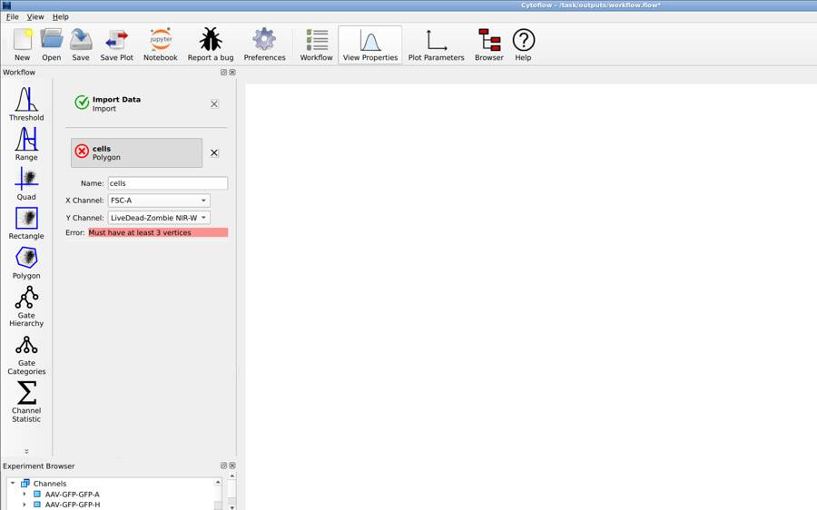
text(await tools.exec_command({cmd:"cu click 359 385 && cu screenshot /tmp/screen.png","max_output_tokens":1000}));image((await tools.view_image({path:"/tmp/screen.png"})).image_url);
Script completed Wall time 0.2 seconds Output:
{"chunk_id":"bf9052","wall_time_seconds":0.02302589,"exit_code":0,"original_token_count":4,"output":"/tmp/screen.png\n"}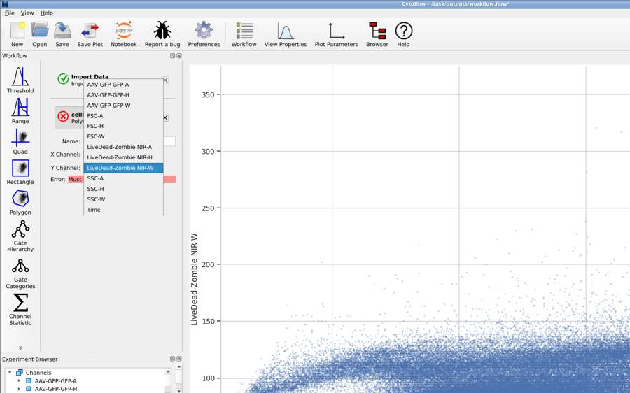
text(await tools.exec_command({cmd:"cu click 227 407 && cu click 62 30 && cu screenshot /tmp/screen.png","max_output_tokens":1000}));image((await tools.view_image({path:"/tmp/screen.png"})).image_url);
Script completed Wall time 0.3 seconds Output:
{"chunk_id":"7a3a26","wall_time_seconds":0.13003555,"exit_code":0,"original_token_count":4,"output":"/tmp/screen.png\n"}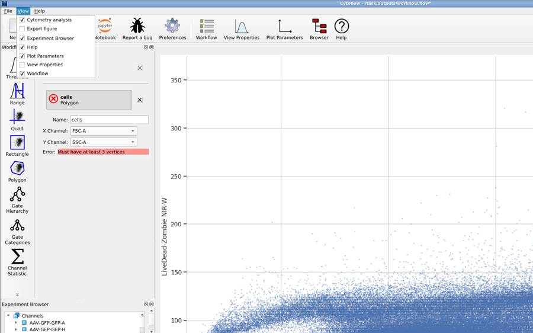
text(await tools.exec_command({cmd:"cu click 120 175 && cu screenshot /tmp/screen.png","max_output_tokens":1000}));image((await tools.view_image({path:"/tmp/screen.png"})).image_url);
Script completed Wall time 0.2 seconds Output:
{"chunk_id":"72dc41","wall_time_seconds":0.05715305,"exit_code":0,"original_token_count":4,"output":"/tmp/screen.png\n"}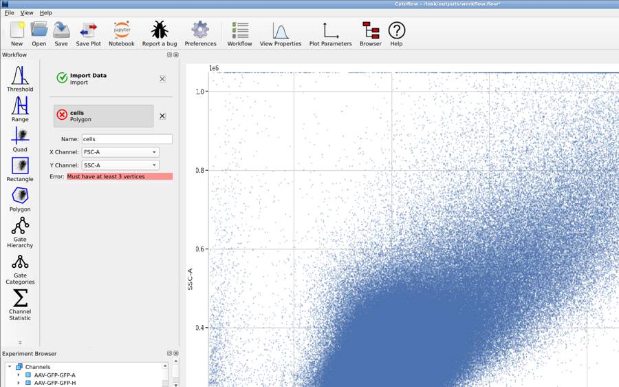
text(await tools.exec_command({cmd:"cu key alt+F10 && cu screenshot /tmp/screen.png","max_output_tokens":1000}));image((await tools.view_image({path:"/tmp/screen.png"})).image_url);
Script completed Wall time 0.2 seconds Output:
{"chunk_id":"85d32e","wall_time_seconds":0.00000356,"exit_code":0,"original_token_count":4,"output":"/tmp/screen.png\n"}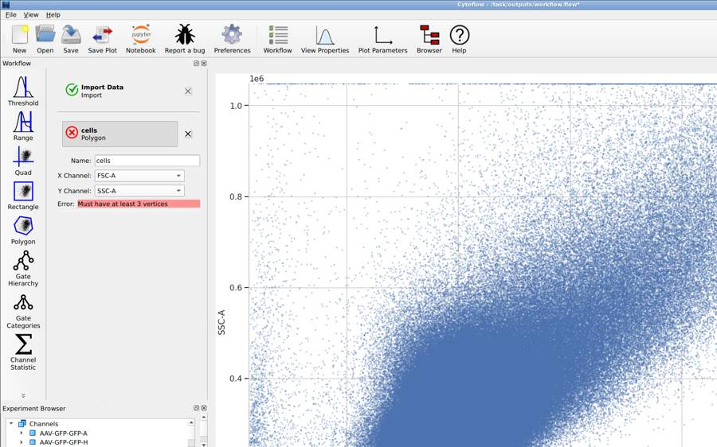
text(await tools.exec_command({cmd:"cu click 745 10 double && cu screenshot /tmp/screen.png","max_output_tokens":1000}));image((await tools.view_image({path:"/tmp/screen.png"})).image_url);
Script completed Wall time 0.3 seconds Output:
{"chunk_id":"bc7792","wall_time_seconds":0.1393282,"exit_code":0,"original_token_count":4,"output":"/tmp/screen.png\n"}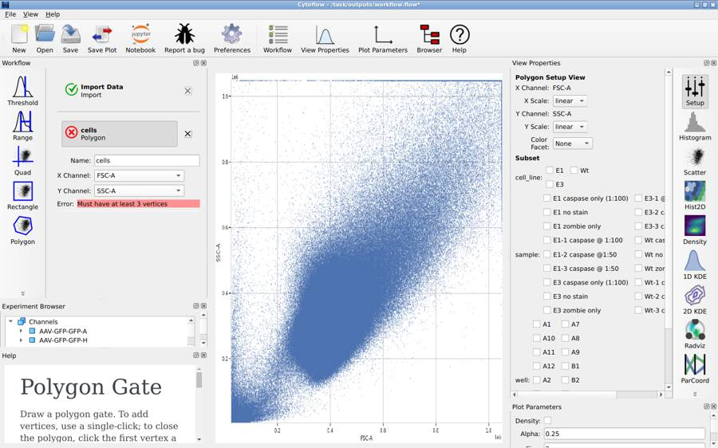
text(await tools.exec_command({cmd:"cu click 543 789 && cu click 662 789 && cu click 1001 621 && cu click 1001 174 && cu click 844 174 && cu click 597 489 && cu click 533 687 && cu click 543 789 && cu key ctrl+s && cu screenshot /tmp/screen.png","max_output_tokens":1000}));image((await tools.view_image({path:"/tmp/screen.png"})).image_url);
Script completed Wall time 1.0 seconds Output:
{"chunk_id":"d209c7","wall_time_seconds":0.79992791,"exit_code":0,"original_token_count":4,"output":"/tmp/screen.png\n"}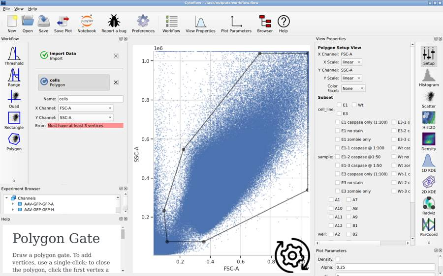
text(await tools.web__run({search_query:[{q:'site.cytoflow.readthedocs.io "Gate Hierarchy" "Name" "Gates"'}],response_length:"long"}));
text(await tools.exec_command({cmd:"cu click 408 714 && cu click 409 614 && cu click 47 452 && cu screenshot /tmp/screen.png","max_output_tokens":1000}));image((await tools.view_image({path:"/tmp/screen.png"})).image_url);
Script completed Wall time 1.6 seconds Output:
Instructions for Use (https://med.nyu.edu/research/scientific-cores-shared-resources/sites/default/files/cytoflex-user-manual-2016.pdf) citeturn1search12 [wordlim: 200] Published: 2.2 years ago; Check the relationship between the parent and daughter gates in the Gate Hierarchy window. ... Right-click directly on a gate plot to change the name and color. Data Acquisition and Sample Analysis Analyzing and Exporting Data Analyzing and Exporting Data 1 Select the sample tube to be analyzed. 2 Establish new gates or adjust the position of existing gates. Refer to Creating Plots and Gates. NOTE Changing a gate’s position does not affect the positions of other gates already established on a given sample tube. Each test tube individually records the positions of its associated gates. If you need to make a change that concerns all the tubes, you must select the gate, then right-click the correctly positioned gate and select Apply to All Tubes. 3 Select . The Gate Hierarchy screen appears. 4 Check the relationship between the parent and daughter gates in the Gate Hierarchy window. NOTE Newly added gates become subsets of populations displayed in plots with existing gates. Name and display color can be modified. Right-click directly on a gate plot to change the name and color. B49006AE 5-44-------------------------------------------------------------------------------- B49006AE.book (https://daytam.atauni.edu.tr/wp-content/uploads/2021/02/Cytoflex-Manual.pdf) citeturn1search13 [wordlim: 200] Published: 11.0 years ago; Crawled: 11.0 years ago; Check the relationship between the parent and daughter gates in the Gate Hierarchy window. ... Gate Hierarchy window showing a population tree for Tube Name: VERIFY TUBE with columns Population, Events, % Total, and % Parent. Data Acquisition and Sample Analysis Analyzing and Exporting Data # Analyzing and Exporting Data 1. Select the sample tube to be analyzed. 2. Establish new gates or adjust the position of existing gates. Refer to Creating Plots and Gates. NOTE Changing a gate’s position does not affect the positions of other gates already established on a given sample tube. Each test tube individually records the positions of its associated gates. If you need to make a change that concerns all the tubes, you must select the gate, then right-click the correctly positioned gate and select Apply to All Tubes. 3. Select [gate hierarchy icon]. The Gate Hierarchy screen appears. 4. Check the relationship between the parent and daughter gates in the Gate Hierarchy window. NOTE Newly added gates become subsets of populations displayed in plots with existing gates. Name and display color can be modified. Right-click directly on a gate plot to change the name and color. <visual_element id="e1"> Five small flow cytometry scatter plots showing gated populations and labels such as VERIFY TUBE: All Events, VERIFY TUBE: Lymphocytes, VERIFY TUBE: CD45+, VERIFY TUBE: T cells, and VERIFY TUBE: CD45+; colored gate boxes and point clouds are visible. </visual_element> <visual_element id="e2"> Gate Hierarchy window showing a population tree for Tube Name: VERIFY TUBE with columns Population, Events, % Total, and % Parent. Rows include All Events, Lymphocytes, CD45+, T cells, and CD4+ with numeric counts and percentages. A color palette popup is open for changing gate color. </visual_element> <visual_element id="e3"> Gate plot window titled Tube1: All Events with a red dashed rectangular gate labeled P1(####) and a right-click context menu showing Edit Name, Color, Apply to All Tubes, Copy, and Delete. </visual_element> 5-44 B49006AE-------------------------------------------------------------------------------- Additional Information for Aseptic Sorting (https://www.scripps.edu/_files/images/science-and-medicines/technology-cores-and-services/flow-cytometry/CytoFlex-SRT-IFU.pdf) citeturn1search14 [wordlim: 200] 4 Check the relationship between the parent and daughter gates in the Gate Hierarchy window. ... Right-click directly on a gate plot to change the name and color. Additional Information for Aseptic Sorting Aseptic Sorting Workflow: <table id="e1"> <tr> <td>Aseptic Cleaning</td> <td>➔</td> <td>System Startup</td> <td>➔</td> <td>QC</td> <td>➔</td> <td>Sort calibration</td> <td>➔</td> <td>Create experiment</td> <td>➔</td> <td>Sorting</td> </tr> </table> For instructions on the Aseptic Cleaning, refer to Aseptic Clean Program in CHAPTER 10, Cleaning Procedures. Exporting Data 1 Select the sample tube to be analyzed. 2 Establish new gates or adjust the position of existing gates. Refer to Creating Plots and Gates. <visual_element id="e2"> A row of five small example scatter plots showing gate placement changes on sample data; each plot contains colored gated populations and rectangular gate boxes in different positions, illustrating how gates can be created or adjusted. </visual_element> NOTE Changing a gate’s position does not affect the positions of other gates already established on a given sample tube. Each test tube individually records the positions of its associated gates. If you need to make a change that concerns all the tubes, you must select the gate, then right-click the correctly positioned gate and select Apply to All Tubes. 3 Select [gate hierarchy icon]. The Gate Hierarchy screen appears. 4 Check the relationship between the parent and daughter gates in the Gate Hierarchy window. NOTE Newly added gates become subsets of populations displayed in plots with existing gates. The name and display color can be modified. Right-click directly on a gate plot to change the name and color. NOTE Select No Color to leave the gated events uncolored while retaining the color of the parent populations. By default, the populations defined by a vertical gate, hinged gate, or four-quadrant gate are uncolored. C37808AC 5-111-------------------------------------------------------------------------------- B49006AE.book (https://ped … [28,988 more characters not shown]
{"chunk_id":"ec7019","wall_time_seconds":0.24430795,"exit_code":0,"original_token_count":4,"output":"/tmp/screen.png\n"}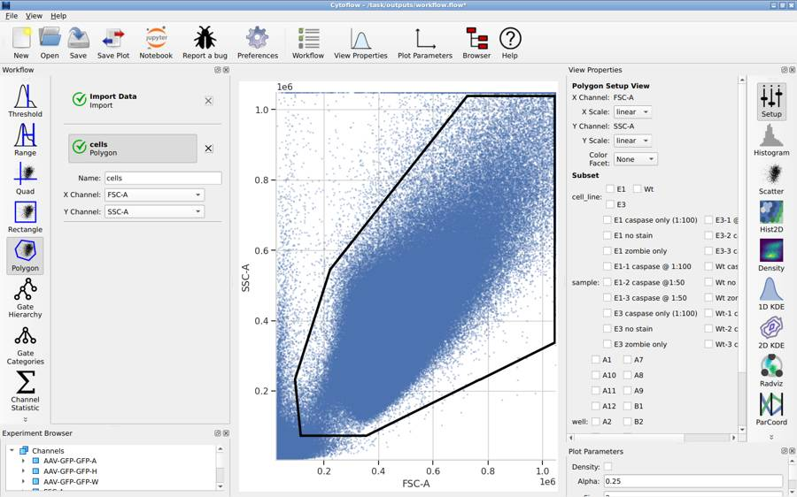
text(await tools.exec_command({cmd:"cu screenshot /tmp/screen.png","max_output_tokens":1000}));image((await tools.view_image({path:"/tmp/screen.png"})).image_url);
Script completed Wall time 0.1 seconds Output:
{"chunk_id":"fa5b29","wall_time_seconds":0.00000379,"exit_code":0,"original_token_count":4,"output":"/tmp/screen.png\n"}
text(await tools.exec_command({cmd:"cu click 276 408 && cu type 'singlet_shape' && cu click 352 439 && cu key f && cu key Return && cu click 353 469 && cu key f && cu key Down && cu key Return && cu click 1086 395 && cu screenshot /tmp/screen.png","max_output_tokens":1000}));image((await tools.view_image({path:"/tmp/screen.png"})).image_url);
Script completed Wall time 0.9 seconds Output:
{"chunk_id":"6c6fde","wall_time_seconds":0.74932742,"exit_code":0,"original_token_count":4,"output":"/tmp/screen.png\n"}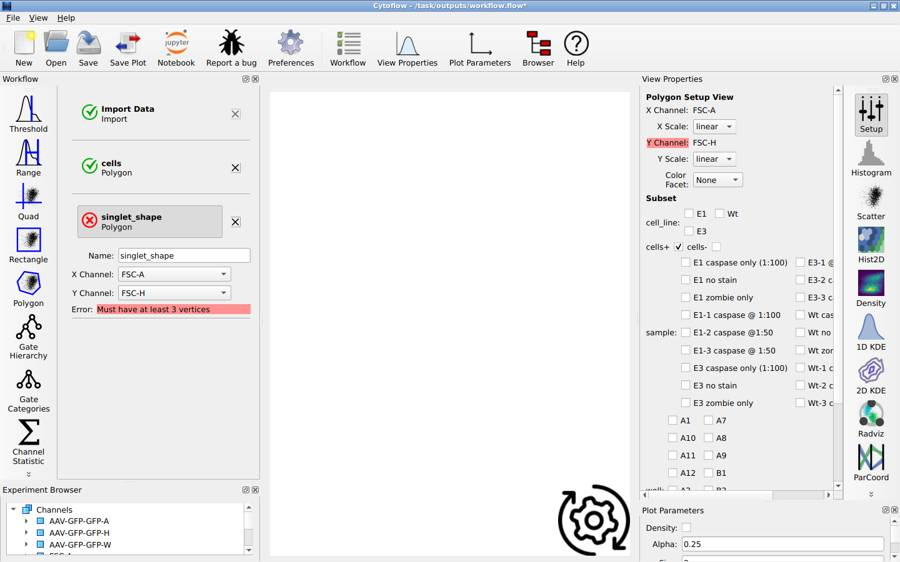
text(await tools.exec_command({cmd:"cu screenshot /tmp/screen.png","max_output_tokens":1000}));image((await tools.view_image({path:"/tmp/screen.png"})).image_url);
Script completed Wall time 0.1 seconds Output:
{"chunk_id":"baa249","wall_time_seconds":0.00000368,"exit_code":0,"original_token_count":4,"output":"/tmp/screen.png\n"}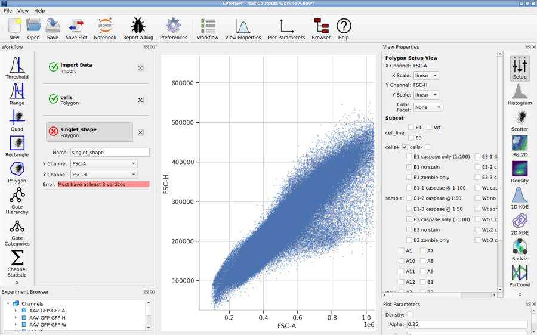
text(await tools.exec_command({cmd:"cu click 570 807 && cu click 570 744 && cu click 707 595 && cu click 845 414 && cu click 1000 297 && cu click 1000 489 && cu click 707 718 && cu click 570 807 && cu key ctrl+s && cu click 47 528 && cu screenshot /tmp/screen.png","max_output_tokens":1000}));image((await tools.view_image({path:"/tmp/screen.png"})).image_url);
Script completed Wall time 1.1 seconds Output:
{"chunk_id":"26e807","wall_time_seconds":0.89535192,"exit_code":0,"original_token_count":4,"output":"/tmp/screen.png\n"}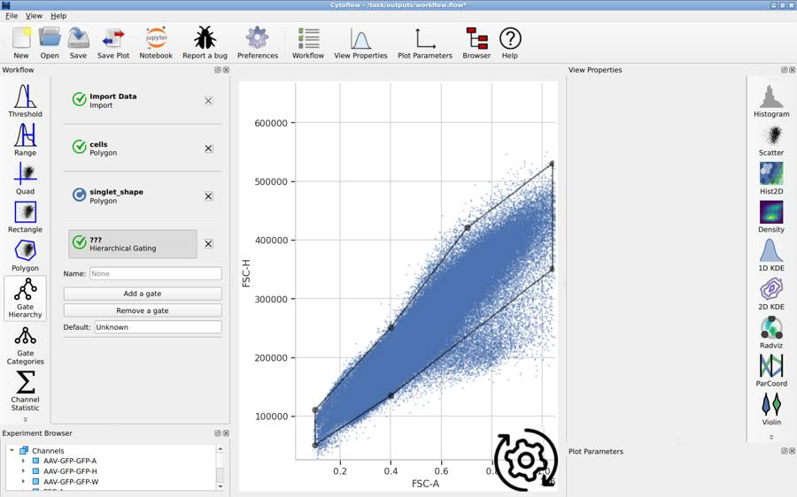
text(await tools.exec_command({cmd:"cu click 258 495 && cu key ctrl+a && cu type 'singlets' && cu click 264 532 && cu screenshot /tmp/screen.png","max_output_tokens":1000}));image((await tools.view_image({path:"/tmp/screen.png"})).image_url);
Script completed Wall time 0.5 seconds Output:
{"chunk_id":"e3ff1b","wall_time_seconds":0.36175799,"exit_code":0,"original_token_count":4,"output":"/tmp/screen.png\n"}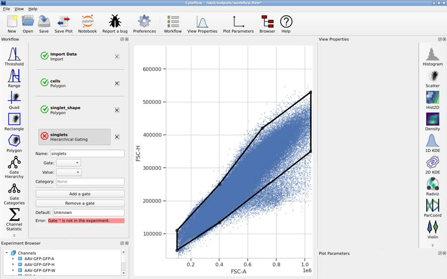
text(await tools.exec_command({cmd:"cu click 924 69 && cu screenshot /tmp/screen.png","max_output_tokens":1000}));image((await tools.view_image({path:"/tmp/screen.png"})).image_url);
text(await tools.web__run({open:[{ref_id:"https://cytoflow.readthedocs.io/en/1.3.2/user_manual/reference/operations/hierarchy.html"}],response_length:"long"}));
Script completed Wall time 0.9 seconds Output:
{"chunk_id":"e76ea0","wall_time_seconds":0.02147437,"exit_code":0,"original_token_count":4,"output":"/tmp/screen.png\n"}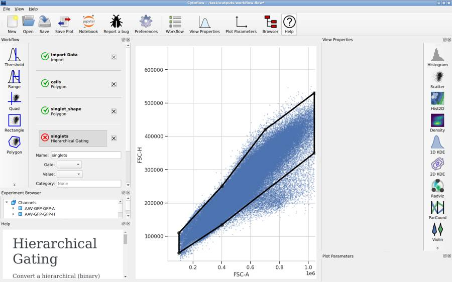
Hierarchical Gating — Cytoflow 1.3.2 documentation (https://cytoflow.readthedocs.io/en/1.3.2/user_manual/reference/operations/hierarchy.html)
citeturn2view0 [wordlim: 200] Crawled: 2 months ago; Content type: text/html; Source: open({"ref_id":"https://cytoflow.readthedocs.io/en/1.3.2/user_manual/reference/operations/hierarchy.html","lineno":null}); Total lines: 112
L0: Back to top
L1:
L2: [Input: Search the docs ...] `Ctrl`+`K`
L3:
L4: Section Navigation
L5: * 【0†Tutorials】
L6: * 【1†Tutorial: Quickstart】
L7: * 【2†Tutorial: Dose-Response】
L8: * 【3†Tutorial: Hierarchical Gating】
L9: * 【4†Tutorial: Estimating Genome Size】
L10: * 【5†Tutorial: Microbial Diversity】
L11: * 【6†Tutorial: Yeast Multidimensional Induction Timecourse】
L12: * 【7†Tutorial: Synthetic Gene Logic Network】
L13: * 【8†Tutorial: Transcriptional Repressor Characterization】
L14: * 【9†Tutorial: Machine Learning】
L15: * 【10†Tutorial: Computational Cytometry】
L16: * 【11†How-To Guides】
L17: * 【12†HOWTO: Install Cytoflow】
L18: * 【13†HOWTO: Import an experiment from a table】
L19: * 【14†HOWTO: Compensate for bleedthrough】
L20: * 【15†HOWTO: Use beads to correct for day-to-day variation】
L21: * 【16†HOWTO: Use the TASBE workflow for calibrated flow cytometry】
L22: * 【17†HOWTO: Export FCS files】
L23: * 【18†HOWTO: Export plots】
L24: * 【19†HOWTO: Use different gates for different subsets of data】
L25: * 【20†HOWTO: Add error bars to a statistics plot】
L26: * 【21†Users’ guides】
L27: * 【22†Guide: Using facets to compare data sets】
L28: * 【23†Guide: Using statistics to summarize data】
L29: * 【24†Guide: Which measure of center should I use?】
L30: * 【25†Guide: How can I understand the experiment structure?】
L31: * 【26†Operation and View Gallery】
L32: * 【27†Autofluorescence correction】
L33: * 【28†Bead Calibration】
L34: * 【29†Binning】
L35: * 【30†Linear Bleedthrough Compensation】
L36: * 【31†Categorical Gating】
L37: * 【32†Channel statistic】
L38: * 【33†Color Translation】
L39: * 【34†Density Gate】
L40: * 【35†FlowClean】
L41: * 【36†FlowPeaks Clustering】
L42: * 【37†Gaussian Mixture Model (1D)】
L43: * 【38†Gaussian Mixture Model (2D)】
L44: * 【39†Hierarchical Gating】
L45: * 【40†Import Files】
L46: * 【41†KMeans】
L47: * 【42†Minimum Spanning Tree Gate】
L48: * 【43†Multi-channel statistic】
L49: * 【44†Principal Component Analysis】
L50: * 【45†Polygon Gate】
L51: * 【46†Quadrant Gate】
L52: * 【47†Range Gate】
L53: * 【48†2D Range Gate】
L54: * 【49†Ratio】
L55: * 【50†Registration】
L56: * 【51†Self-Organizing Map Clustering】
L57: * 【52†TASBE Calibrated Flow Cytometry】
L58: * 【53†Threshold Gate】
L59: * 【54†t-Stochastic Neighbor Embedding】
L60: * 【55†Transform statistic】
L61: * 【56†Bar Chart】
L62: * 【57†Density Plot】
L63: * 【58†Export FCS】
L64: * 【59†Histogram】
L65: * 【60†2D Histogram】
L66: * 【61†1D Kernel Density Estimate】
L67: * 【62†2D Kernel Density Estimate】
L68: * 【63†Long Table】
L69: * 【64†Matrix Chart】
L70: * 【65†Minimum spanning tree plot】
L71: * 【66†Parallel Coordinates Plot】
L72: * 【67†Radviz Plot】
L73: * 【68†Scatterplot】
L74: * 【69†1D Statistics Plot】
L75: * 【70†2D Statistics Plot】
L76: * 【71†Table】
L77: * 【72†Violin Plot】
L78: * 【73†Screenshots of the Cytoflow GUI】
L79: * 【74†Frequently Asked Questions】
L80: # Hierarchical Gating【75†#】
L81:
L82: Convert a hierarchical (binary) gating strategy into a categorical condition.
L83: Hierarchical gating strategies are quite common when doing manual gating. For example, an 8-stain panel can separate monocytes into macrophages, B cells, NK cells, NKT cells, T cells, DCs, and neutrophils – but then, because these states are mutually exclusive, a reasonable question is “how much of each are there?” `Cytoflow` can define these gates, but because it does not have any concept of nested gates, plotting and analyzing this gating strategy can be challenging.
L84: The `Hierarchical Gating` operation converts a list of gates into a categorical variable to enable straightforward analysis. For example, monocytes stained with CD64, CD3 and CD19 can differentiate between macrophages and B cells. A user defines a threshold gate to separate CD64+ cells (macrophages) from the rest of the events, then they use a polygon gate to distinguish the CD19+/CD3- cells (B cells) from everything else.
L85: The `Hierarchical Gating` operation can take these two gates and create a categorical condition with the values `Macrophages`, `B_Cells`, and `Unknown`.
L86: The operation is set up by providing a list of conditions, values for those conditions, and the category that condition indicates. Figuring out an event’s category is done by evaluating the hierarchical gates in order. For each event, the first condition/value pair is considered. If that event has that value, its new category is set accordingly. If not, then the next gate in the list is considered. If the event is a member in none of the gates, it receives the category listed in the `Default` attribute.
L87: Name
L88:
L89:
L90: The name of the new condition that this operation creates.
L91:
L92: Gates
L93:
L94:
L95: The ordered list of gates that implement the gating hierarchy. For each, you need to specify:
L96:
L97: * The name of the pre-existing condition
L98:
L99: * The value that the condition has to have to indicate membership in this class.
L100:
L101: * The name of the new category.
L102:
L103: Default
L104:
L105:
L106: The name that unclassified events will have in the new categorical condition.
L107: © Copyright Massachusetts Institute of Technology 2015-2018, Brian Teague 2018-2026.
L108:
L109: Created using 【76†Sphinx†www.sphinx-doc.org】 9.1.0.
L110:
L111: Built with the 【77†PyData Sphinx Theme†pydata-sphinx-theme.readthedocs.io】 0.18.0.
text(await tools.exec_command({cmd:"cu click 362 440 && cu screenshot /tmp/screen.png","max_output_tokens":1000}));image((await tools.view_image({path:"/tmp/screen.png"})).image_url);
Script completed Wall time 0.2 seconds Output:
{"chunk_id":"420483","wall_time_seconds":0.008759499,"exit_code":0,"original_token_count":4,"output":"/tmp/screen.png\n"}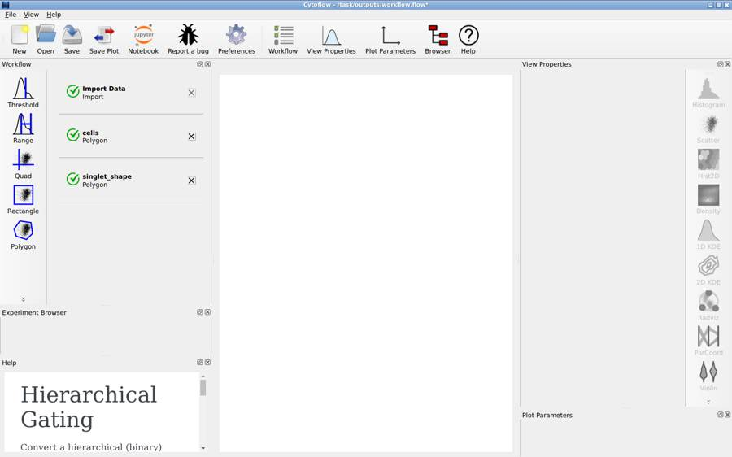
text(await tools.exec_command({cmd:"cu click 408 713 && cu click 233 353 && cu screenshot /tmp/screen.png","max_output_tokens":1000}));image((await tools.view_image({path:"/tmp/screen.png"})).image_url);
Script completed Wall time 0.3 seconds Output:
{"chunk_id":"df5d60","wall_time_seconds":0.11623511,"exit_code":0,"original_token_count":4,"output":"/tmp/screen.png\n"}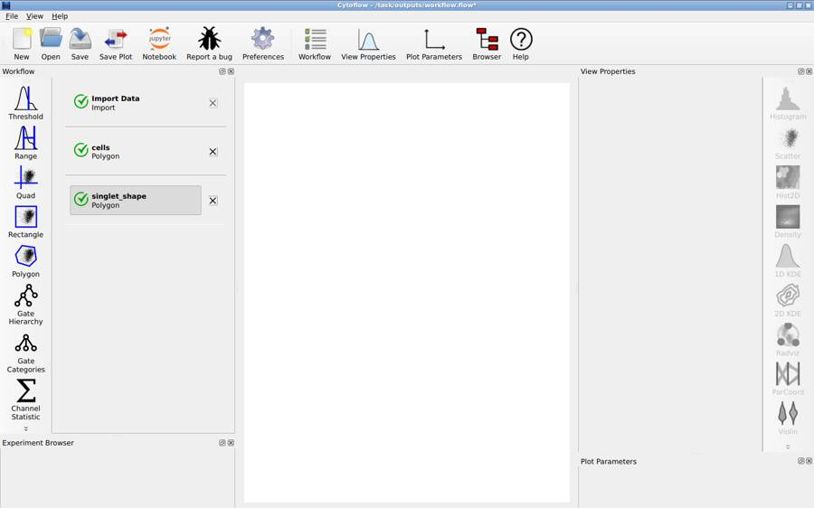
text(await tools.exec_command({cmd:"cu screenshot /tmp/screen.png","max_output_tokens":1000}));image((await tools.view_image({path:"/tmp/screen.png"})).image_url);
Script completed Wall time 0.1 seconds Output:
{"chunk_id":"0a0472","wall_time_seconds":0.00000496,"exit_code":0,"original_token_count":4,"output":"/tmp/screen.png\n"}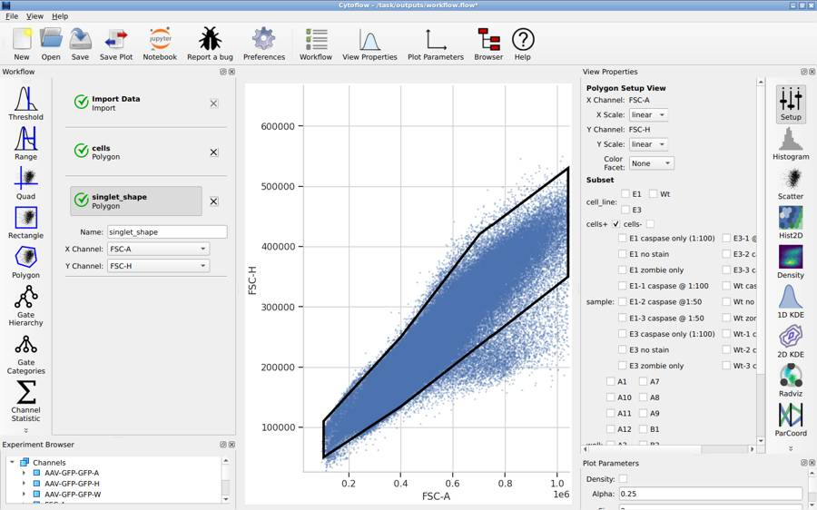
text(await tools.exec_command({cmd:"cu click 287 408 && cu key ctrl+a && cu type 'singlets' && cu key Tab && cu click 45 246 && cu screenshot /tmp/screen.png","max_output_tokens":1000}));image((await tools.view_image({path:"/tmp/screen.png"})).image_url);
Script completed Wall time 0.6 seconds Output:
{"chunk_id":"3416b3","wall_time_seconds":0.3808942,"exit_code":0,"original_token_count":4,"output":"/tmp/screen.png\n"}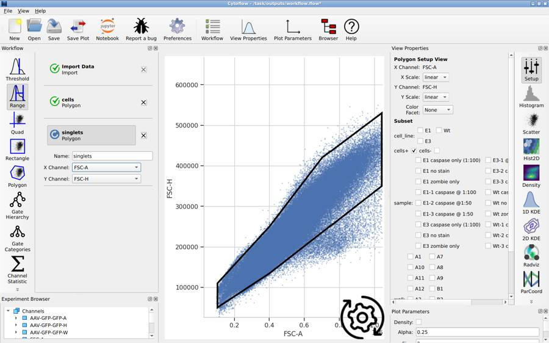
await new Promise(r=>setTimeout(r,1200));text(await tools.exec_command({cmd:"cu screenshot /tmp/screen.png","max_output_tokens":1000}));image((await tools.view_image({path:"/tmp/screen.png"})).image_url);
Script completed Wall time 1.3 seconds Output:
{"chunk_id":"b0f5af","wall_time_seconds":0.00000306,"exit_code":0,"original_token_count":4,"output":"/tmp/screen.png\n"}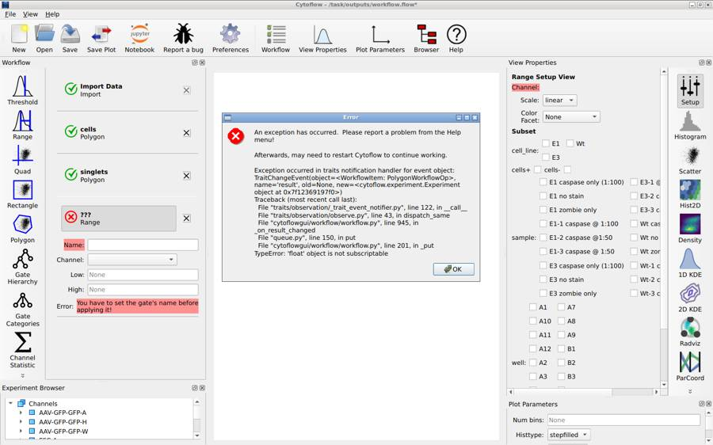
text(await tools.exec_command({cmd:"cu click 914 546 && cu click 282 495 && cu type 'live' && cu click 344 525 && cu key l && cu key Return && cu click 1128 202 && cu key l && cu key l && cu key Return && cu click 1086 342 && cu scroll 1250 674 down 3","max_output_tokens":1000}));await new Promise(r=>setTimeout(r,1800));text(await tools.exec_command({cmd:"cu screenshot /tmp/screen.png","max_output_tokens":1000}));image((await tools.view_image({path:"/tmp/screen.png"})).image_url);
Script completed Wall time 2.9 seconds Output:
{"chunk_id":"29ab09","wall_time_seconds":0.86589584,"exit_code":0,"original_token_count":0,"output":""}{"chunk_id":"85bcfe","wall_time_seconds":0.00000377,"exit_code":0,"original_token_count":4,"output":"/tmp/screen.png\n"}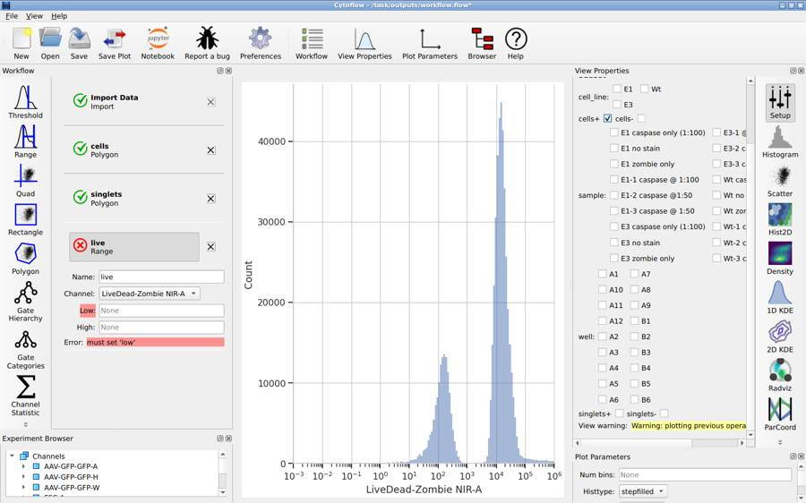
text(await tools.exec_command({cmd:"cu click 1106 739 && cu click 1076 630","max_output_tokens":1000}));await new Promise(r=>setTimeout(r,1500));text(await tools.exec_command({cmd:"cu screenshot /tmp/screen.png","max_output_tokens":1000}));image((await tools.view_image({path:"/tmp/screen.png"})).image_url);
Script completed Wall time 1.8 seconds Output:
{"chunk_id":"1dfe88","wall_time_seconds":0.06348486,"exit_code":0,"original_token_count":0,"output":""}{"chunk_id":"e6d120","wall_time_seconds":0.00000378,"exit_code":0,"original_token_count":4,"output":"/tmp/screen.png\n"}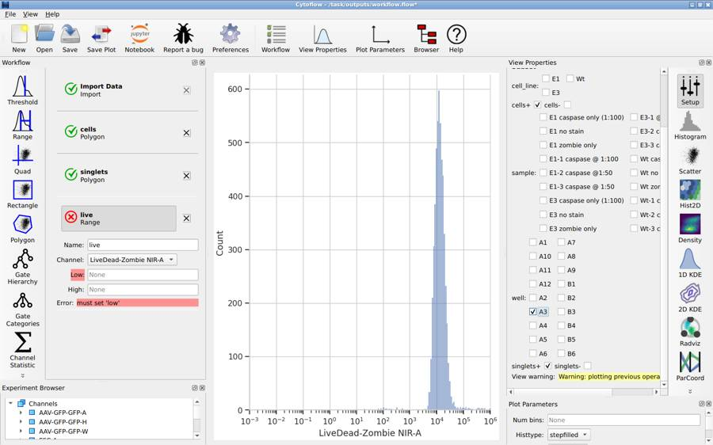
text(await tools.exec_command({cmd:"cu click 1134 546 && cu click 1134 630 && cu scroll 1258 314 up 4","max_output_tokens":1000}));await new Promise(r=>setTimeout(r,1000));text(await tools.exec_command({cmd:"cu screenshot /tmp/screen.png","max_output_tokens":1000}));image((await tools.view_image({path:"/tmp/screen.png"})).image_url);
Script completed Wall time 1.7 seconds Output:
{"chunk_id":"9fdc6c","wall_time_seconds":0.47063025,"exit_code":0,"original_token_count":0,"output":""}{"chunk_id":"6cb9fc","wall_time_seconds":0.00000358,"exit_code":0,"original_token_count":4,"output":"/tmp/screen.png\n"}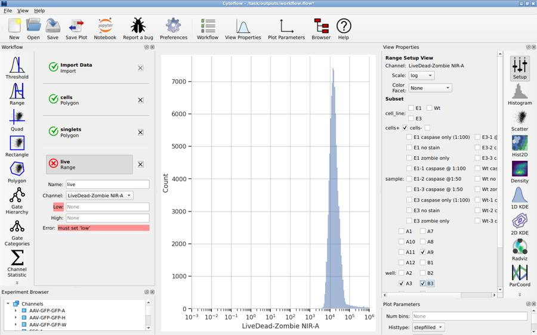
text(await tools.exec_command({cmd:"cu click 1198 235 && cu key w && cu key Return && cu click 268 555 && cu key ctrl+a && cu type '-1000000' && cu click 275 585 && cu key ctrl+a && cu type '50000' && cu key Tab","max_output_tokens":1000}));await new Promise(r=>setTimeout(r,1200));text(await tools.exec_command({cmd:"cu screenshot /tmp/screen.png","max_output_tokens":1000}));image((await tools.view_image({path:"/tmp/screen.png"})).image_url);
Script completed Wall time 2.1 seconds Output:
{"chunk_id":"49f527","wall_time_seconds":0.60726601,"exit_code":0,"original_token_count":0,"output":""}{"chunk_id":"dc4e51","wall_time_seconds":0.00000352,"exit_code":0,"original_token_count":4,"output":"/tmp/screen.png\n"}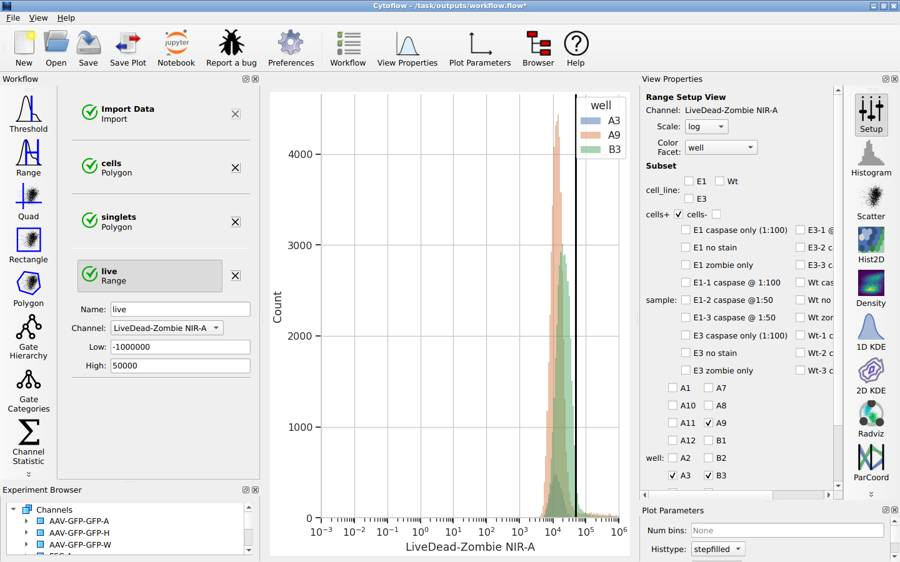
text(await tools.exec_command({cmd:"cu key ctrl+s && cu screenshot /task/outputs/qc_live_controls.png && cu click 45 174","max_output_tokens":1000}));await new Promise(r=>setTimeout(r,800));text(await tools.exec_command({cmd:"cu screenshot /tmp/screen.png","max_output_tokens":1000}));image((await tools.view_image({path:"/tmp/screen.png"})).image_url);
Script completed Wall time 1.1 seconds Output:
{"chunk_id":"7f6dbc","wall_time_seconds":0.04671129,"exit_code":0,"original_token_count":9,"output":"/task/outputs/qc_live_controls.png\n"}{"chunk_id":"4d60fe","wall_time_seconds":0.00000351,"exit_code":0,"original_token_count":4,"output":"/tmp/screen.png\n"}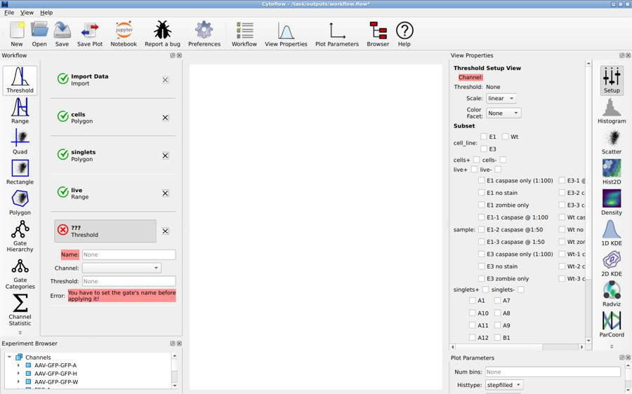
text(await tools.exec_command({cmd:"cu click 279 583 && cu key ctrl+a && cu type 'caspase_positive' && cu click 353 613 && cu key a && cu key Return && cu click 1153 225 && cu key l && cu key l && cu key Return && cu click 1172 258 && cu key w && cu key Return && cu click 1086 365 && cu click 1081 387 && cu click 1107 661 && cu scroll 1235 660 down 3","max_output_tokens":1000}));await new Promise(r=>setTimeout(r,1500));text(await tools.exec_command({cmd:"cu screenshot /tmp/screen.png","max_output_tokens":1000}));image((await tools.view_image({path:"/tmp/screen.png"})).image_url);
Script completed Wall time 3.2 seconds Output:
{"chunk_id":"dc9924","wall_time_seconds":1.44832936,"exit_code":0,"original_token_count":0,"output":""}{"chunk_id":"12aabe","wall_time_seconds":0.00000451,"exit_code":0,"original_token_count":4,"output":"/tmp/screen.png\n"}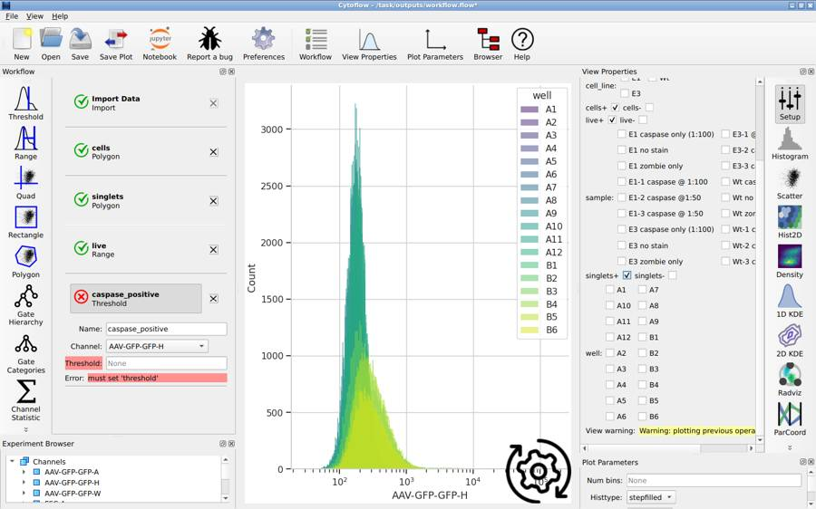
text(await tools.exec_command({cmd:"cu click 355 612 && cu key Home && cu key Return && cu click 1076 512 && cu click 1134 512 && cu click 1134 568 && cu click 1134 596 && cu click 1076 651 && cu click 1134 651","max_output_tokens":1000}));await new Promise(r=>setTimeout(r,1500));text(await tools.exec_command({cmd:"cu screenshot /tmp/screen.png","max_output_tokens":1000}));image((await tools.view_image({path:"/tmp/screen.png"})).image_url);
Script completed Wall time 2.4 seconds Output:
{"chunk_id":"d94f32","wall_time_seconds":0.62742432,"exit_code":0,"original_token_count":0,"output":""}{"chunk_id":"740678","wall_time_seconds":0.00000495,"exit_code":0,"original_token_count":4,"output":"/tmp/screen.png\n"}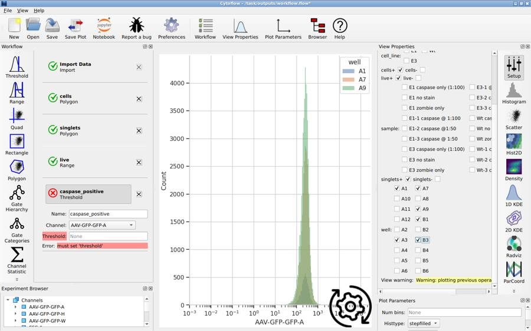
await new Promise(r=>setTimeout(r,1500));text(await tools.exec_command({cmd:"cu screenshot /tmp/screen.png","max_output_tokens":1000}));image((await tools.view_image({path:"/tmp/screen.png"})).image_url);
Script completed Wall time 1.6 seconds Output:
{"chunk_id":"9468ee","wall_time_seconds":0.00000403,"exit_code":0,"original_token_count":4,"output":"/tmp/screen.png\n"}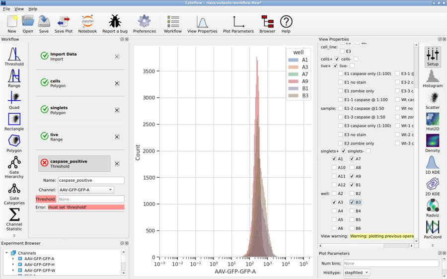
text(await tools.exec_command({cmd:"cu click 285 642 && cu key ctrl+a && cu type '1000' && cu key Tab && cu key ctrl+s","max_output_tokens":1000}));await new Promise(r=>setTimeout(r,1600));text(await tools.exec_command({cmd:"cu screenshot /task/outputs/qc_caspase_controls.png && cu click 1076 512 && cu click 1134 512 && cu click 1134 568 && cu click 1134 596 && cu click 1076 651 && cu click 1134 651","max_output_tokens":1000}));await new Promise(r=>setTimeout(r,1500));text(await tools.exec_command({cmd:"cu screenshot /tmp/screen.png","max_output_tokens":1000}));image((await tools.view_image({path:"/tmp/screen.png"})).image_url);
Script completed Wall time 4.2 seconds Output:
{"chunk_id":"9c8319","wall_time_seconds":0.13538844,"exit_code":0,"original_token_count":0,"output":""}{"chunk_id":"833871","wall_time_seconds":0.54620854,"exit_code":0,"original_token_count":10,"output":"/task/outputs/qc_caspase_controls.png\n"}{"chunk_id":"76cc54","wall_time_seconds":0.00000389,"exit_code":0,"original_token_count":4,"output":"/tmp/screen.png\n"}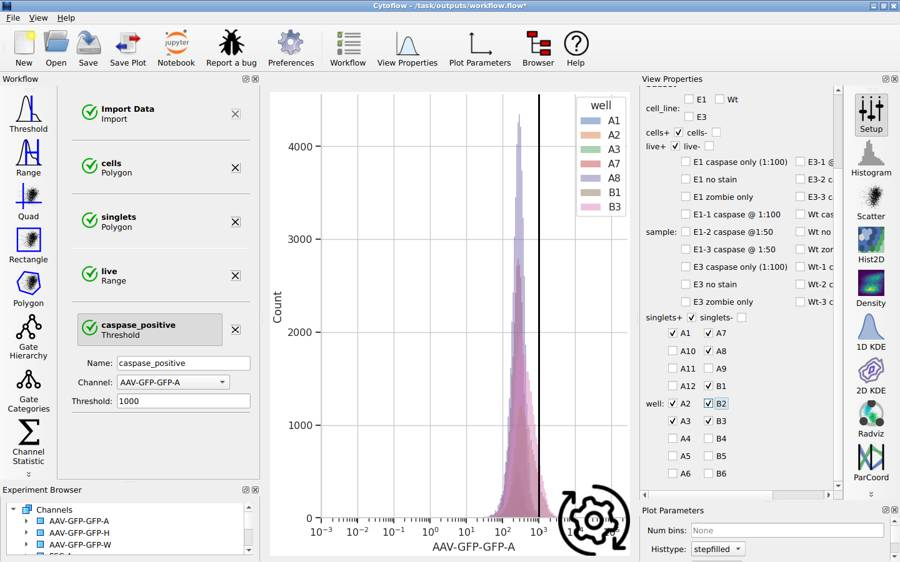
text(await tools.exec_command({cmd:"cu click 47 693","max_output_tokens":1000}));await new Promise(r=>setTimeout(r,1000));text(await tools.exec_command({cmd:"cu screenshot /tmp/screen.png","max_output_tokens":1000}));image((await tools.view_image({path:"/tmp/screen.png"})).image_url);
Script completed Wall time 1.2 seconds Output:
{"chunk_id":"9da1f2","wall_time_seconds":0.00000291,"exit_code":0,"original_token_count":0,"output":""}{"chunk_id":"b61841","wall_time_seconds":0.00000384,"exit_code":0,"original_token_count":4,"output":"/tmp/screen.png\n"}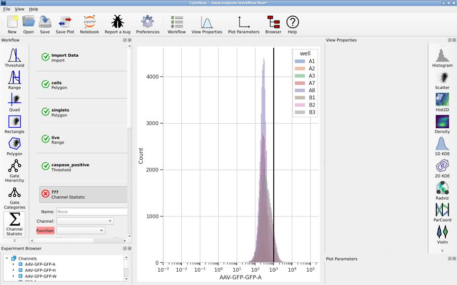
text(await tools.exec_command({cmd:"cu click 266 668 && cu key ctrl+a && cu type 'event_counts' && cu click 344 698 && cu key Home && cu key Return && cu click 319 729 && cu key c && cu key Return && cu scroll 309 680 down 5 && cu click 1394 792","max_output_tokens":1000}));await new Promise(r=>setTimeout(r,1000));text(await tools.exec_command({cmd:"cu screenshot /tmp/screen.png","max_output_tokens":1000}));image((await tools.view_image({path:"/tmp/screen.png"})).image_url);
Script completed Wall time 2.4 seconds Output:
{"chunk_id":"03bfae","wall_time_seconds":1.17965342,"exit_code":0,"original_token_count":0,"output":""}{"chunk_id":"c9a33c","wall_time_seconds":0.0000045,"exit_code":0,"original_token_count":4,"output":"/tmp/screen.png\n"}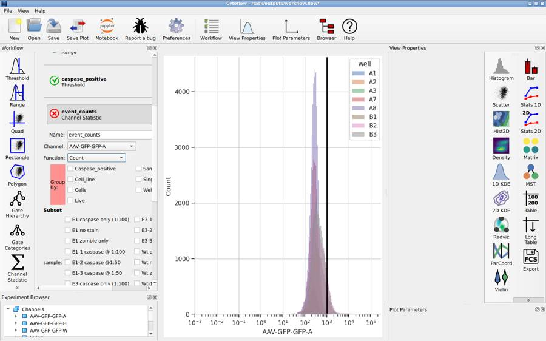
text(await tools.exec_command({cmd:"cu click 185 445 && cu click 185 501 && cu click 185 529 && cu click 366 473 && cu click 366 501 && cu click 1401 592","max_output_tokens":1000}));await new Promise(r=>setTimeout(r,1800));text(await tools.exec_command({cmd:"cu screenshot /tmp/screen.png","max_output_tokens":1000}));image((await tools.view_image({path:"/tmp/screen.png"})).image_url);
Script completed Wall time 2.6 seconds Output:
{"chunk_id":"47e582","wall_time_seconds":0.48733539,"exit_code":0,"original_token_count":0,"output":""}{"chunk_id":"5a8ea2","wall_time_seconds":0.00000359,"exit_code":0,"original_token_count":4,"output":"/tmp/screen.png\n"}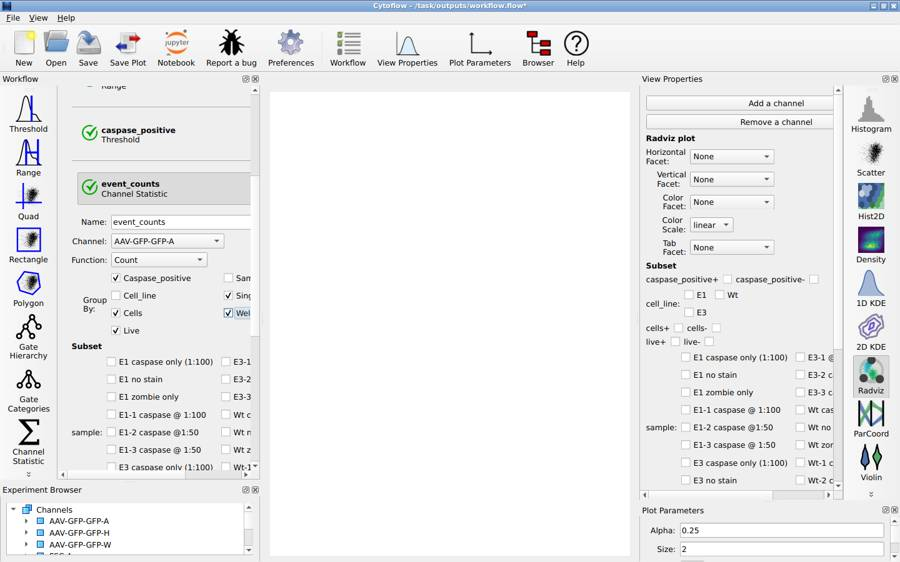
text(await tools.exec_command({cmd:"cu click 1394 791","max_output_tokens":1000}));await new Promise(r=>setTimeout(r,500));text(await tools.exec_command({cmd:"cu screenshot /tmp/screen.png","max_output_tokens":1000}));image((await tools.view_image({path:"/tmp/screen.png"})).image_url);
Script completed Wall time 0.7 seconds Output:
{"chunk_id":"916fec","wall_time_seconds":0.0000026,"exit_code":0,"original_token_count":0,"output":""}{"chunk_id":"82accc","wall_time_seconds":0.00000357,"exit_code":0,"original_token_count":4,"output":"/tmp/screen.png\n"}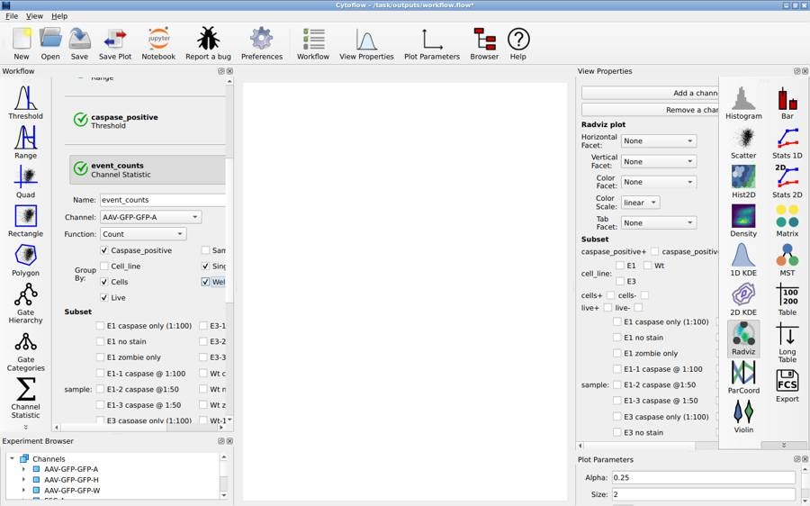
text(await tools.exec_command({cmd:"cu click 1401 598","max_output_tokens":1000}));await new Promise(r=>setTimeout(r,600));text(await tools.exec_command({cmd:"cu screenshot /tmp/screen.png","max_output_tokens":1000}));image((await tools.view_image({path:"/tmp/screen.png"})).image_url);
Script completed Wall time 0.8 seconds Output:
{"chunk_id":"e27154","wall_time_seconds":0.00000333,"exit_code":0,"original_token_count":0,"output":""}{"chunk_id":"5fe3e0","wall_time_seconds":0.00000372,"exit_code":0,"original_token_count":4,"output":"/tmp/screen.png\n"}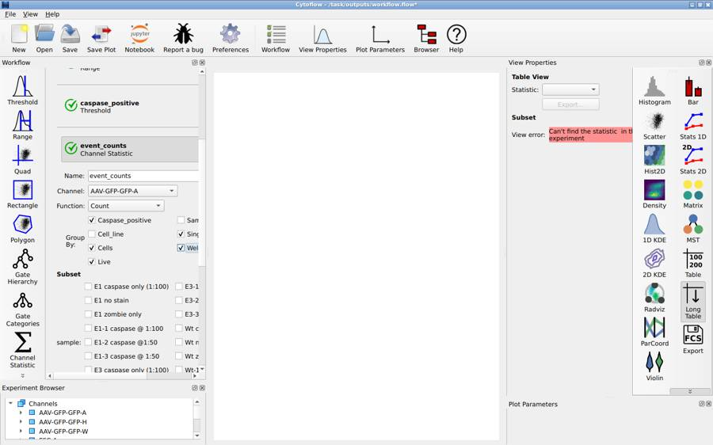
text(await tools.exec_command({cmd:"cu click 1196 182 && cu key Down && cu key Return","max_output_tokens":1000}));await new Promise(r=>setTimeout(r,1000));text(await tools.exec_command({cmd:"cu screenshot /tmp/screen.png","max_output_tokens":1000}));image((await tools.view_image({path:"/tmp/screen.png"})).image_url);
Script completed Wall time 1.3 seconds Output:
{"chunk_id":"85f91d","wall_time_seconds":0.00000331,"exit_code":0,"original_token_count":0,"output":""}{"chunk_id":"d700c7","wall_time_seconds":0.00000341,"exit_code":0,"original_token_count":4,"output":"/tmp/screen.png\n"}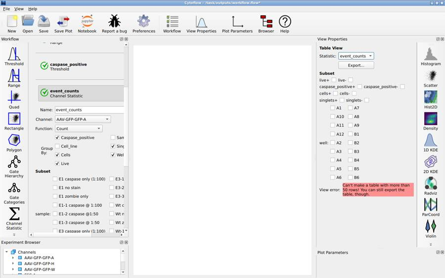
text(await tools.exec_command({cmd:"cu click 1152 211","max_output_tokens":1000}));await new Promise(r=>setTimeout(r,400));text(await tools.exec_command({cmd:"cu paste '/task/outputs/gui_event_counts.csv' && cu screenshot /tmp/screen.png","max_output_tokens":1000}));image((await tools.view_image({path:"/tmp/screen.png"})).image_url);
Script completed Wall time 2.0 seconds Output:
{"chunk_id":"2a276f","wall_time_seconds":0.00000325,"exit_code":0,"original_token_count":0,"output":""}{"chunk_id":"77f37b","wall_time_seconds":1.24520415,"exit_code":0,"original_token_count":4,"output":"/tmp/screen.png\n"}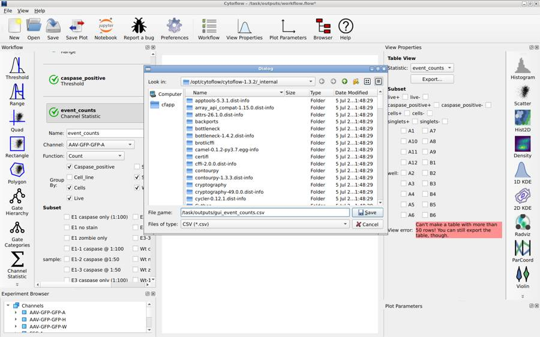
text(await tools.exec_command({cmd:"cu click 980 570 && cu key ctrl+s","max_output_tokens":1000}));await new Promise(r=>setTimeout(r,600));text(await tools.exec_command({cmd:"python - <<'PY'\nimport pandas as pd\np='/task/outputs/gui_event_counts.csv'\nd=pd.read_csv(p)\nprint(d.head(20).to_string(index=False))\nprint(d.shape, d.columns.tolist())\nPY","max_output_tokens":3000}));
Script completed
Wall time 0.8 seconds
Output:
{"chunk_id":"e6e999","wall_time_seconds":0.000003,"exit_code":0,"original_token_count":0,"output":""}
{"chunk_id":"32358f","wall_time_seconds":0.00000392,"exit_code":127,"original_token_count":12,"output":"/bin/bash: line 1: python: command not found\n"}text(await tools.exec_command({cmd:"python3 - <<'PY'\nimport pandas as pd\np='/task/outputs/gui_event_counts.csv'\nd=pd.read_csv(p)\nprint(d.head(20).to_string(index=False))\nprint(d.shape, d.columns.tolist())\nprint(d.groupby('well')['AAV-GFP-GFP-A'].sum().to_string())\nPY","max_output_tokens":3000}));
Script completed
Wall time 0.4 seconds
Output:
{"chunk_id":"77baf0","wall_time_seconds":0.28246181,"exit_code":0,"original_token_count":410,"output":" caspase_positive cells live singlets well AAV-GFP-GFP-A\n 0 0 0 0 A10 209.0\n 0 0 0 0 A11 214.0\n 0 0 0 0 A12 306.0\n 0 0 0 0 A3 18.0\n 0 0 0 0 A4 46.0\n 0 0 0 0 A5 14.0\n 0 0 0 0 A6 55.0\n 0 0 0 0 A9 162.0\n 0 0 0 0 B3 677.0\n 0 0 0 0 B4 352.0\n 0 0 0 0 B5 325.0\n 0 0 0 0 B6 201.0\n 0 0 0 1 A10 137.0\n 0 0 0 1 A11 112.0\n 0 0 0 1 A12 198.0\n 0 0 0 1 A3 13.0\n 0 0 0 1 A4 63.0\n 0 0 0 1 A5 11.0\n 0 0 0 1 A6 37.0\n 0 0 0 1 A9 156.0\n(237, 6) ['caspase_positive', 'cells', 'live', 'singlets', 'well', 'AAV-GFP-GFP-A']\nwell\nA1 6969.0\nA10 58936.0\nA11 51193.0\nA12 51047.0\nA2 3149.0\nA3 5742.0\nA4 20776.0\nA5 13119.0\nA6 21946.0\nA7 33911.0\nA8 52749.0\nA9 49297.0\nB1 26935.0\nB2 36048.0\nB3 46022.0\nB4 27503.0\nB5 37596.0\nB6 24797.0\n"}text(await tools.exec_command({cmd:"python3 - <<'PY'\nimport pandas as pd\nx=pd.read_csv('/task/outputs/gui_event_counts.csv'); layout=pd.read_csv('/task/inputs/plate_layout.csv'); rows=[]\nfor _,l in layout.iterrows():\n d=x[x.well==l.well]; prev=None\n for pop,role,cols,parent in [('all_events','other',[],'none'),('cells','cells',['cells'],'all_events'),('singlets','singlets',['cells','singlets'],'cells'),('live','live',['cells','singlets','live'],'singlets'),('caspase_positive','marker_positive',['cells','singlets','live','caspase_positive'],'live')]:\n n=int(d.loc[(d[cols]==1).all(axis=1),'AAV-GFP-GFP-A'].sum())\n rows.append(dict(file=l.file,well=l.well,population=pop,role=role,parent=parent,count=n,pct_of_parent=100*n/prev if prev else None)); prev=n\nout=pd.DataFrame(rows);out.to_csv('/task/outputs/counts.csv',index=False)\np=out.pivot(index='well',columns='population',values='count').reindex(layout.well)\np['live_pct']=100*p.live/p.singlets;p['caspase_pct']=100*p.caspase_positive/p.live\nprint(p.round(3).to_string())\nprint('total',p.all_events.sum())\nPY","max_output_tokens":3000}));text(await tools.exec_command({cmd:"cu click 1394 244","max_output_tokens":1000}));await new Promise(r=>setTimeout(r,700));text(await tools.exec_command({cmd:"cu screenshot /tmp/screen.png","max_output_tokens":1000}));image((await tools.view_image({path:"/tmp/screen.png"})).image_url);
Script completed Wall time 1.2 seconds Output:
{"chunk_id":"b4380f","wall_time_seconds":0.13430789,"exit_code":0,"original_token_count":444,"output":"population all_events caspase_positive cells live singlets live_pct caspase_pct\nwell \nA1 6969 12 6407 6343 6343 100.000 0.189\nA2 3149 33 2582 2559 2559 100.000 1.290\nA3 5742 8 5210 5079 5164 98.354 0.158\nA4 20776 186 19791 19157 19484 98.322 0.971\nA5 13119 144 12632 12300 12456 98.748 1.171\nA6 21946 243 21120 20351 20866 97.532 1.194\nA7 33911 67 32706 32420 32420 100.000 0.207\nA8 52749 207 51314 50651 50651 100.000 0.409\nA9 49297 86 47710 45833 47226 97.050 0.188\nA10 58936 238 57189 54764 56444 97.024 0.435\nA11 51193 203 49386 47430 48834 97.125 0.428\nA12 51047 285 48865 46568 48343 96.328 0.612\nB1 26935 2132 23353 23076 23076 100.000 9.239\nB2 36048 4100 31687 31283 31283 100.000 13.106\nB3 46022 3363 40565 38230 39984 95.613 8.797\nB4 27503 1980 24200 21688 23860 90.897 9.129\nB5 37596 4263 33839 32158 33373 96.359 13.256\nB6 24797 2248 22170 20370 21939 92.848 11.036\ntotal 567735\n"}{"chunk_id":"acaaf2","wall_time_seconds":0.00000289,"exit_code":0,"original_token_count":0,"output":""}{"chunk_id":"99a247","wall_time_seconds":0.00000372,"exit_code":0,"original_token_count":4,"output":"/tmp/screen.png\n"}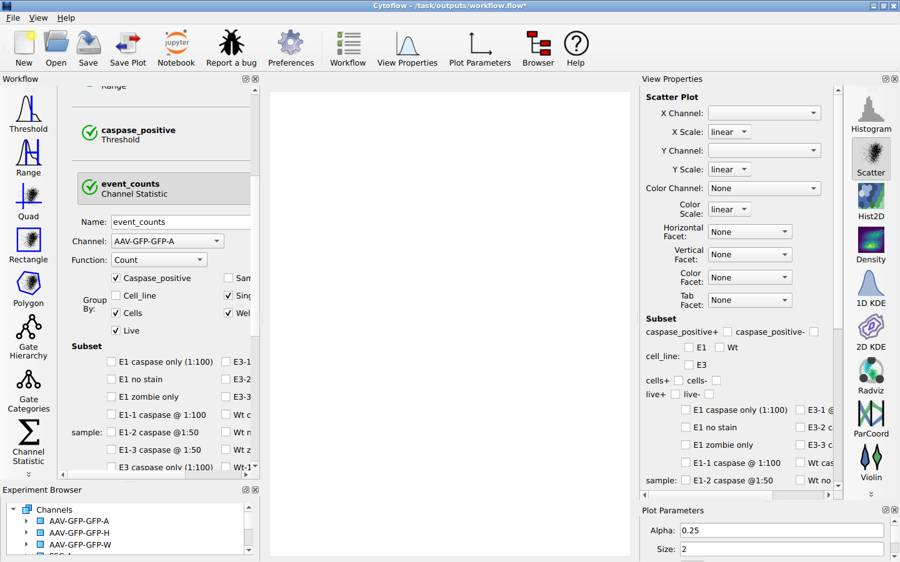
text(await tools.exec_command({cmd:"cu click 1299 181 && cu key End && cu key Return && cu click 1300 241 && cu key Home && cu key Down && cu key Down && cu key Down && cu key Return && cu click 1254 481 && cu key w && cu key Return","max_output_tokens":1000}));await new Promise(r=>setTimeout(r,1600));text(await tools.exec_command({cmd:"cu screenshot /tmp/screen.png","max_output_tokens":1000}));image((await tools.view_image({path:"/tmp/screen.png"})).image_url);
Script completed Wall time 2.2 seconds Output:
{"chunk_id":"dc94a2","wall_time_seconds":0.30837575,"exit_code":0,"original_token_count":0,"output":""}{"chunk_id":"10036f","wall_time_seconds":0.00000359,"exit_code":0,"original_token_count":4,"output":"/tmp/screen.png\n"}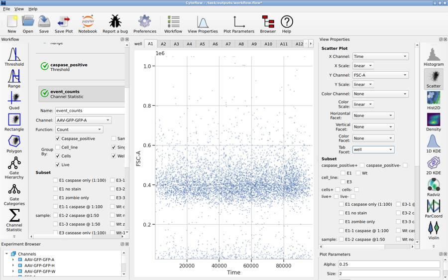
for (const [well,x] of [['A2',526],['A3',568],['A4',609]]) {
text(await tools.exec_command({cmd:`cu click ${x} 140`,max_output_tokens:1000}));await new Promise(r=>setTimeout(r,950));
text(await tools.exec_command({cmd:`cu screenshot /task/outputs/qc_time_${well}.png`,max_output_tokens:1000}));image((await tools.view_image({path:`/task/outputs/qc_time_${well}.png`})).image_url);
}
Script completed Wall time 3.6 seconds Output:
{"chunk_id":"eb3487","wall_time_seconds":0.00000334,"exit_code":0,"original_token_count":0,"output":""}{"chunk_id":"188764","wall_time_seconds":0.00000401,"exit_code":0,"original_token_count":8,"output":"/task/outputs/qc_time_A2.png\n"}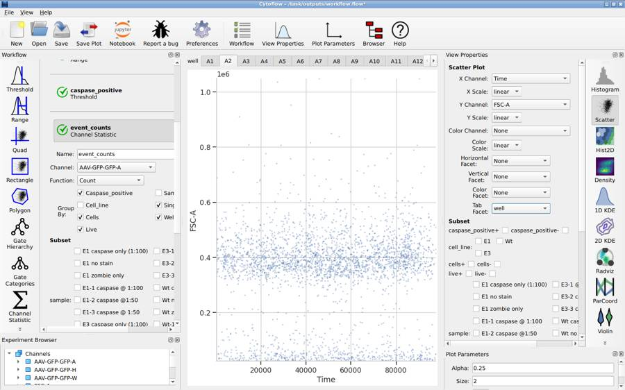
{"chunk_id":"7ee969","wall_time_seconds":0.00000381,"exit_code":0,"original_token_count":0,"output":""}{"chunk_id":"2b88c1","wall_time_seconds":0.00000412,"exit_code":0,"original_token_count":8,"output":"/task/outputs/qc_time_A3.png\n"}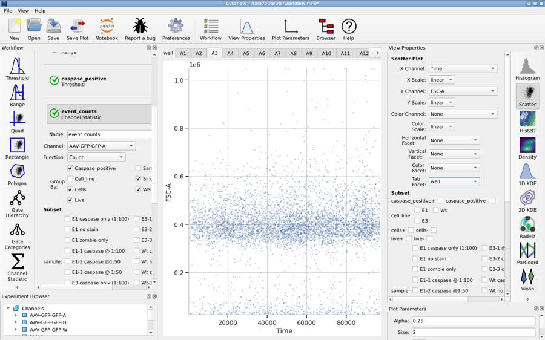
{"chunk_id":"81b4cd","wall_time_seconds":0.00000332,"exit_code":0,"original_token_count":0,"output":""}{"chunk_id":"e4fa97","wall_time_seconds":0.00000398,"exit_code":0,"original_token_count":8,"output":"/task/outputs/qc_time_A4.png\n"}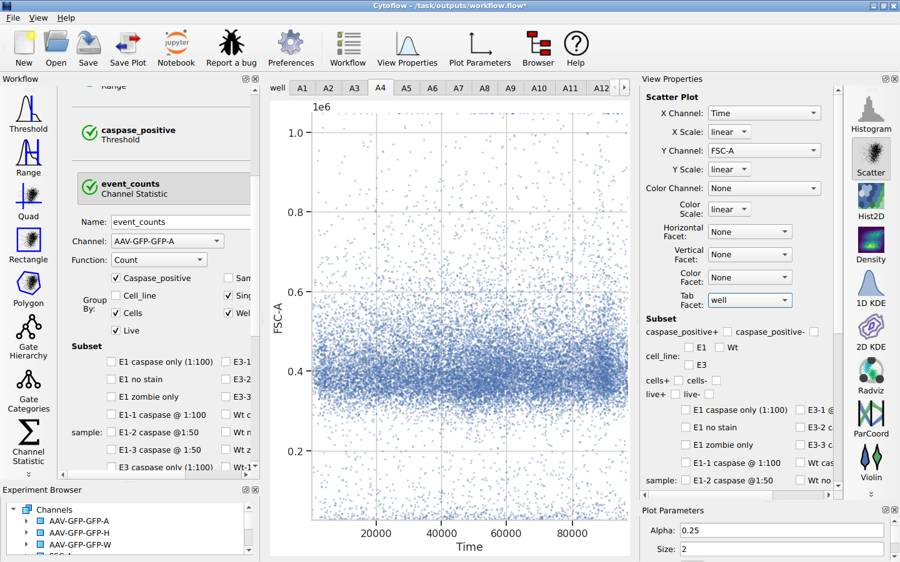
for (const [well,x] of [['A5',652],['A6',693],['A7',734],['A8',775]]) {
text(await tools.exec_command({cmd:`cu click ${x} 140`,max_output_tokens:1000}));await new Promise(r=>setTimeout(r,900));
text(await tools.exec_command({cmd:`cu screenshot /task/outputs/qc_time_${well}.png`,max_output_tokens:1000}));image((await tools.view_image({path:`/task/outputs/qc_time_${well}.png`})).image_url);
}
Script completed Wall time 4.7 seconds Output:
{"chunk_id":"cafb43","wall_time_seconds":0.00000363,"exit_code":0,"original_token_count":0,"output":""}{"chunk_id":"c5008b","wall_time_seconds":0.00000366,"exit_code":0,"original_token_count":8,"output":"/task/outputs/qc_time_A5.png\n"}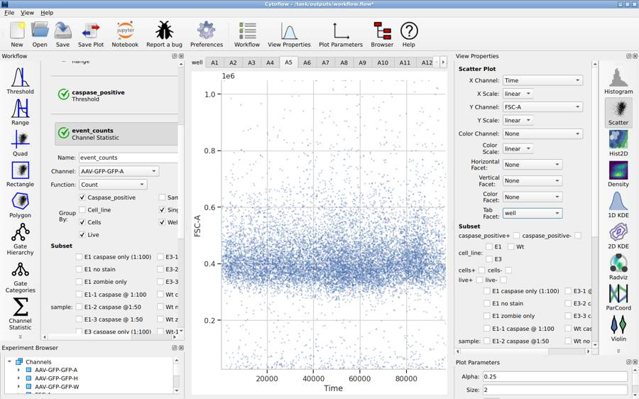
{"chunk_id":"fac42c","wall_time_seconds":0.00000323,"exit_code":0,"original_token_count":0,"output":""}{"chunk_id":"fc3de9","wall_time_seconds":0.00000432,"exit_code":0,"original_token_count":8,"output":"/task/outputs/qc_time_A6.png\n"}{"chunk_id":"3dbf4d","wall_time_seconds":0.00000326,"exit_code":0,"original_token_count":0,"output":""}{"chunk_id":"1ea068","wall_time_seconds":0.00000402,"exit_code":0,"original_token_count":8,"output":"/task/outputs/qc_time_A7.png\n"}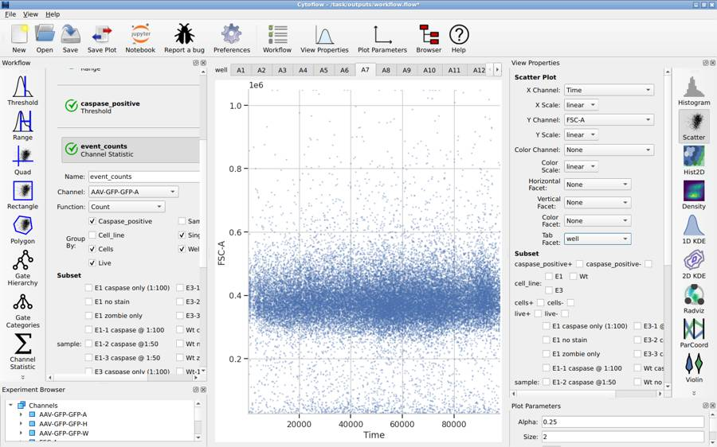
{"chunk_id":"27ee90","wall_time_seconds":0.00000351,"exit_code":0,"original_token_count":0,"output":""}{"chunk_id":"bcb714","wall_time_seconds":0.0000044,"exit_code":0,"original_token_count":8,"output":"/task/outputs/qc_time_A8.png\n"}for (const [well,x] of [['A9',816],['A10',860],['A11',912],['A12',958]]) {
text(await tools.exec_command({cmd:`cu click ${x} 140`,max_output_tokens:1000}));await new Promise(r=>setTimeout(r,900));
text(await tools.exec_command({cmd:`cu screenshot /task/outputs/qc_time_${well}.png`,max_output_tokens:1000}));image((await tools.view_image({path:`/task/outputs/qc_time_${well}.png`})).image_url);
}
text(await tools.exec_command({cmd:"cu click 1001 140 && cu click 1001 140 && cu click 1001 140 && cu click 1001 140 && cu click 1001 140 && cu click 1001 140 && cu screenshot /tmp/screen.png","max_output_tokens":1000}));image((await tools.view_image({path:"/tmp/screen.png"})).image_url);
Script completed Wall time 5.4 seconds Output:
{"chunk_id":"b28cd4","wall_time_seconds":0.00000326,"exit_code":0,"original_token_count":0,"output":""}{"chunk_id":"8d3e4d","wall_time_seconds":0.00000423,"exit_code":0,"original_token_count":8,"output":"/task/outputs/qc_time_A9.png\n"}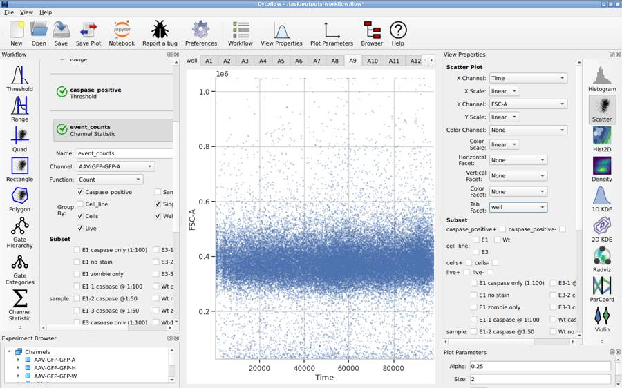
{"chunk_id":"64f7a2","wall_time_seconds":0.00000395,"exit_code":0,"original_token_count":0,"output":""}{"chunk_id":"44022e","wall_time_seconds":0.0000044,"exit_code":0,"original_token_count":8,"output":"/task/outputs/qc_time_A10.png\n"}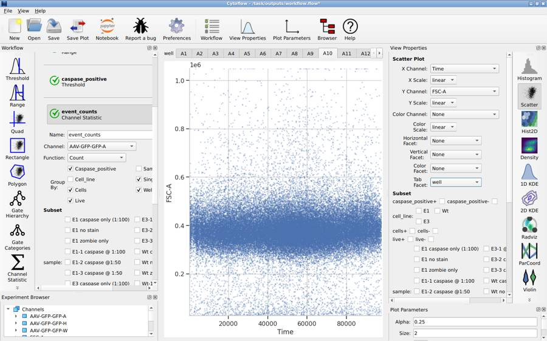
{"chunk_id":"70e78e","wall_time_seconds":0.00000312,"exit_code":0,"original_token_count":0,"output":""}{"chunk_id":"89bf45","wall_time_seconds":0.00000414,"exit_code":0,"original_token_count":8,"output":"/task/outputs/qc_time_A11.png\n"}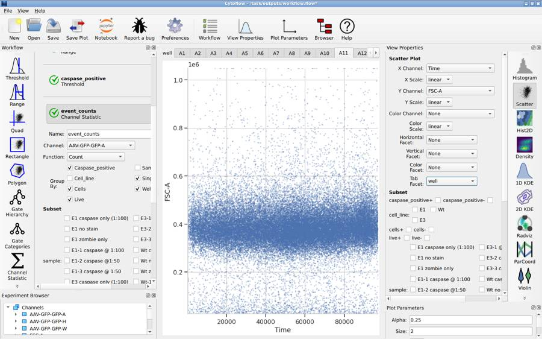
{"chunk_id":"3126d4","wall_time_seconds":0.00000287,"exit_code":0,"original_token_count":0,"output":""}{"chunk_id":"eb0b3a","wall_time_seconds":0.00000422,"exit_code":0,"original_token_count":8,"output":"/task/outputs/qc_time_A12.png\n"}{"chunk_id":"7bc23c","wall_time_seconds":0.566547209,"exit_code":0,"original_token_count":4,"output":"/tmp/screen.png\n"}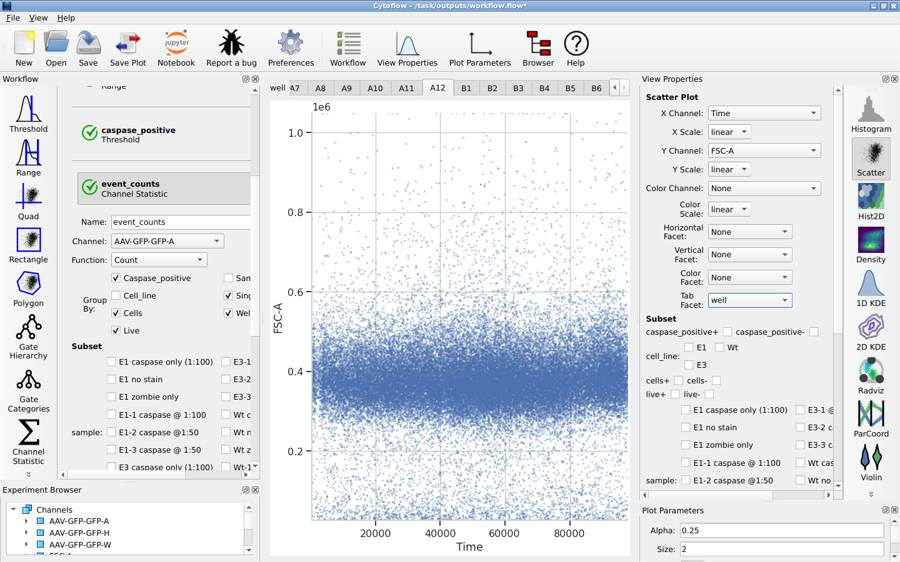
for (const [well,x] of [['B1',746],['B2',789],['B3',829]]) {
text(await tools.exec_command({cmd:`cu click ${x} 140`,max_output_tokens:1000}));await new Promise(r=>setTimeout(r,950));
text(await tools.exec_command({cmd:`cu screenshot /task/outputs/qc_time_${well}.png`,max_output_tokens:1000}));image((await tools.view_image({path:`/task/outputs/qc_time_${well}.png`})).image_url);
}
Script completed Wall time 3.7 seconds Output:
{"chunk_id":"65968c","wall_time_seconds":0.0000027,"exit_code":0,"original_token_count":0,"output":""}{"chunk_id":"d69e6c","wall_time_seconds":0.00000369,"exit_code":0,"original_token_count":8,"output":"/task/outputs/qc_time_B1.png\n"}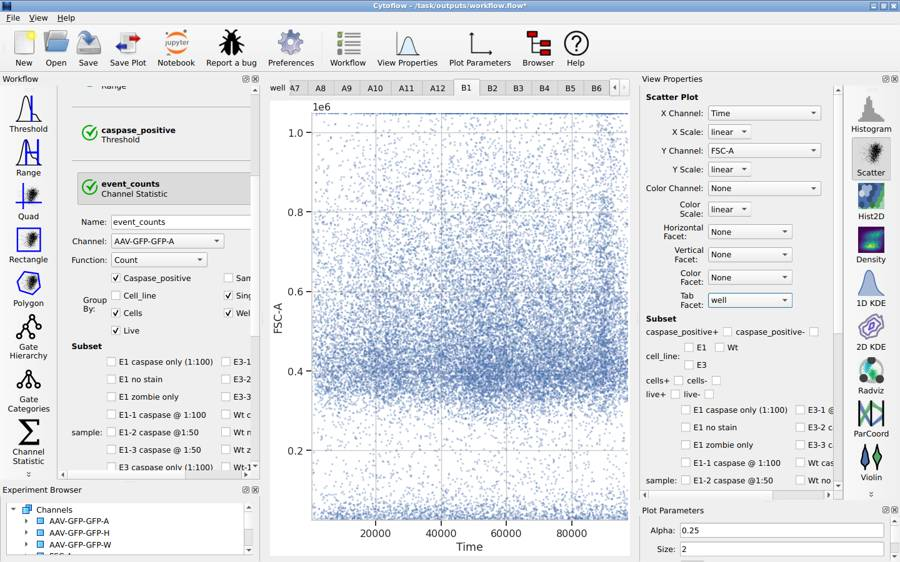
{"chunk_id":"9dc9f1","wall_time_seconds":0.00000352,"exit_code":0,"original_token_count":0,"output":""}{"chunk_id":"1b25ea","wall_time_seconds":0.00000381,"exit_code":0,"original_token_count":8,"output":"/task/outputs/qc_time_B2.png\n"}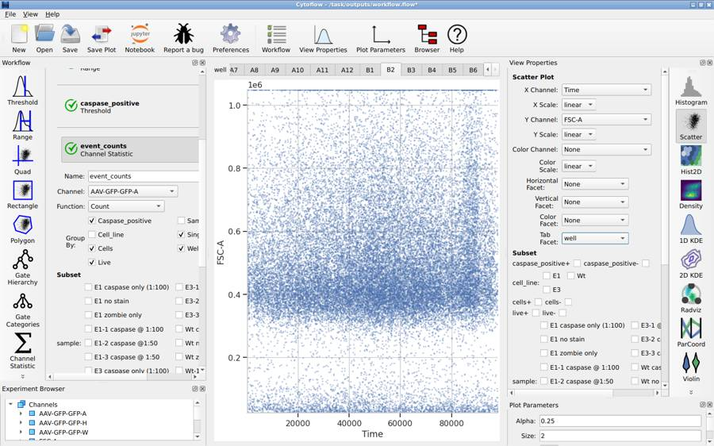
{"chunk_id":"aad95b","wall_time_seconds":0.00000305,"exit_code":0,"original_token_count":0,"output":""}{"chunk_id":"d94520","wall_time_seconds":0.00000371,"exit_code":0,"original_token_count":8,"output":"/task/outputs/qc_time_B3.png\n"}for (const [well,x] of [['B4',871],['B5',914],['B6',955]]) {
text(await tools.exec_command({cmd:`cu click ${x} 140`,max_output_tokens:1000}));await new Promise(r=>setTimeout(r,950));
text(await tools.exec_command({cmd:`cu screenshot /task/outputs/qc_time_${well}.png`,max_output_tokens:1000}));image((await tools.view_image({path:`/task/outputs/qc_time_${well}.png`})).image_url);
}
Script completed Wall time 3.7 seconds Output:
{"chunk_id":"2f3f7c","wall_time_seconds":0.00000291,"exit_code":0,"original_token_count":0,"output":""}{"chunk_id":"b81fc6","wall_time_seconds":0.00000421,"exit_code":0,"original_token_count":8,"output":"/task/outputs/qc_time_B4.png\n"}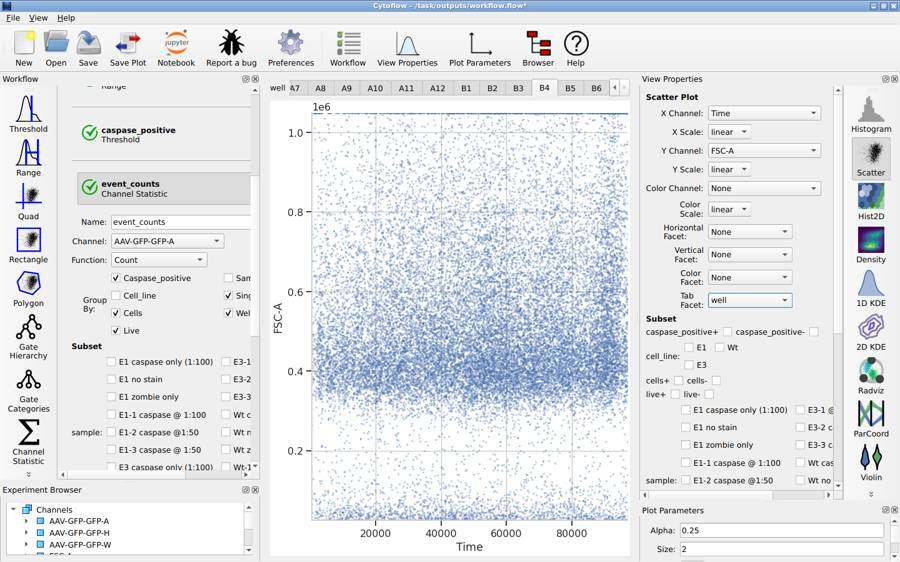
{"chunk_id":"1b720a","wall_time_seconds":0.00000347,"exit_code":0,"original_token_count":0,"output":""}{"chunk_id":"1f4d5f","wall_time_seconds":0.00000338,"exit_code":0,"original_token_count":8,"output":"/task/outputs/qc_time_B5.png\n"}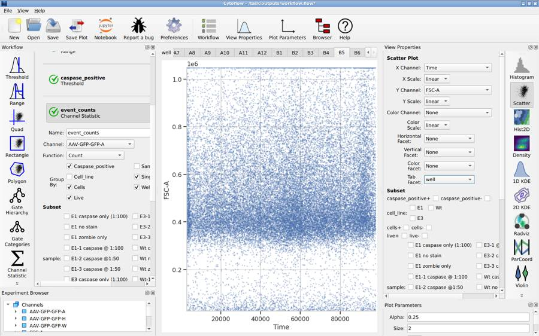
{"chunk_id":"21af6b","wall_time_seconds":0.0000032,"exit_code":0,"original_token_count":0,"output":""}{"chunk_id":"67826c","wall_time_seconds":0.00000371,"exit_code":0,"original_token_count":8,"output":"/task/outputs/qc_time_B6.png\n"}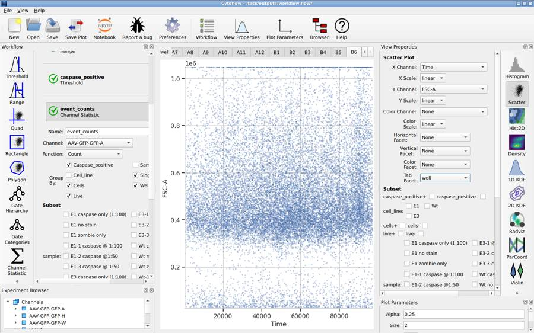
text(await tools.exec_command({cmd:"cu click 46 173","max_output_tokens":1000}));await new Promise(r=>setTimeout(r,700));text(await tools.exec_command({cmd:"cu scroll 309 686 down 6 && cu screenshot /tmp/screen.png","max_output_tokens":1000}));image((await tools.view_image({path:"/tmp/screen.png"})).image_url);
text(await tools.clock__curr_time({}));
Script completed Wall time 1.5 seconds Output:
{"chunk_id":"99f2dc","wall_time_seconds":0.00000335,"exit_code":0,"original_token_count":0,"output":""}{"chunk_id":"33173e","wall_time_seconds":0.5173305,"exit_code":0,"original_token_count":4,"output":"/tmp/screen.png\n"}{"current_time":"2026-11-06 00:38:47 UTC"}text(await tools.exec_command({cmd:"cu click 271 641 && cu key ctrl+a && cu type 'fsc_saturated' && cu click 356 670 && cu key Home && cu key Down && cu key Down && cu key Down && cu key Return && cu click 267 700 && cu key ctrl+a && cu type '1048000' && cu key Tab","max_output_tokens":1000}));await new Promise(r=>setTimeout(r,1100));text(await tools.exec_command({cmd:"cu screenshot /tmp/screen.png","max_output_tokens":1000}));image((await tools.view_image({path:"/tmp/screen.png"})).image_url);
Script completed Wall time 2.2 seconds Output:
{"chunk_id":"a74171","wall_time_seconds":0.83537026,"exit_code":0,"original_token_count":0,"output":""}{"chunk_id":"9477f4","wall_time_seconds":0.00000479,"exit_code":0,"original_token_count":4,"output":"/tmp/screen.png\n"}text(await tools.exec_command({cmd:"cu click 274 715 && cu key ctrl+a && cu type '1048000' && cu key Tab","max_output_tokens":1000}));await new Promise(r=>setTimeout(r,900));text(await tools.exec_command({cmd:"cu click 46 693","max_output_tokens":1000}));await new Promise(r=>setTimeout(r,500));text(await tools.exec_command({cmd:"cu scroll 311 684 down 6 && cu screenshot /tmp/screen.png","max_output_tokens":1000}));image((await tools.view_image({path:"/tmp/screen.png"})).image_url);
Script completed Wall time 2.6 seconds Output:
{"chunk_id":"017893","wall_time_seconds":0.18250866,"exit_code":0,"original_token_count":0,"output":""}{"chunk_id":"a498b6","wall_time_seconds":0.00000332,"exit_code":0,"original_token_count":0,"output":""}{"chunk_id":"ed63cd","wall_time_seconds":0.51490372,"exit_code":0,"original_token_count":4,"output":"/tmp/screen.png\n"}text(await tools.exec_command({cmd:"cu click 274 388 && cu key ctrl+a && cu type 'saturation_counts' && cu click 347 418 && cu key Home && cu key Return && cu click 319 448 && cu key c && cu key Return && cu click 185 562 && cu click 365 562","max_output_tokens":1000}));await new Promise(r=>setTimeout(r,1200));text(await tools.exec_command({cmd:"cu click 1394 791","max_output_tokens":1000}));await new Promise(r=>setTimeout(r,350));text(await tools.exec_command({cmd:"cu click 1400 598","max_output_tokens":1000}));await new Promise(r=>setTimeout(r,450));text(await tools.exec_command({cmd:"cu screenshot /tmp/screen.png","max_output_tokens":1000}));image((await tools.view_image({path:"/tmp/screen.png"})).image_url);
Script completed Wall time 3.5 seconds Output:
{"chunk_id":"d99a98","wall_time_seconds":0.90502054,"exit_code":0,"original_token_count":0,"output":""}{"chunk_id":"e857e9","wall_time_seconds":0.00000308,"exit_code":0,"original_token_count":0,"output":""}{"chunk_id":"8789d2","wall_time_seconds":0.00000341,"exit_code":0,"original_token_count":0,"output":""}{"chunk_id":"6cc155","wall_time_seconds":0.00000383,"exit_code":0,"original_token_count":4,"output":"/tmp/screen.png\n"}text(await tools.exec_command({cmd:"cu click 1228 182 && cu key End && cu key Return","max_output_tokens":1000}));await new Promise(r=>setTimeout(r,700));text(await tools.exec_command({cmd:"cu click 1162 211","max_output_tokens":1000}));await new Promise(r=>setTimeout(r,350));text(await tools.exec_command({cmd:"cu paste '/task/outputs/gui_saturation_counts.csv' && cu screenshot /tmp/screen.png","max_output_tokens":1000}));image((await tools.view_image({path:"/tmp/screen.png"})).image_url);
Script completed Wall time 2.8 seconds Output:
{"chunk_id":"2cf32f","wall_time_seconds":0.00000342,"exit_code":0,"original_token_count":0,"output":""}{"chunk_id":"61788f","wall_time_seconds":0.00000352,"exit_code":0,"original_token_count":0,"output":""}{"chunk_id":"b94e99","wall_time_seconds":1.24609656,"exit_code":0,"original_token_count":4,"output":"/tmp/screen.png\n"}text(await tools.exec_command({cmd:"cu click 981 569 && cu key ctrl+s","max_output_tokens":1000}));await new Promise(r=>setTimeout(r,350));text(await tools.exec_command({cmd:"python3 - <<'PY'\nimport pandas as pd\nx=pd.read_csv('/task/outputs/gui_saturation_counts.csv');p=x.pivot(index='well',columns='fsc_saturated',values='AAV-GFP-GFP-A');p['pct']=p[1]/(p[0]+p[1])*100;print(p.round(3).to_string())\nPY","max_output_tokens":3000}));
text(await tools.exec_command({cmd:"cu scroll 306 358 up 5 && cu screenshot /tmp/screen.png","max_output_tokens":1000}));image((await tools.view_image({path:"/tmp/screen.png"})).image_url);
Script completed Wall time 1.4 seconds Output:
{"chunk_id":"00563b","wall_time_seconds":0.00000359,"exit_code":0,"original_token_count":0,"output":""}{"chunk_id":"d5cbf9","wall_time_seconds":0.0884559,"exit_code":0,"original_token_count":190,"output":"fsc_saturated 0 1 pct\nwell \nA1 6960.0 9.0 0.129\nA10 58877.0 59.0 0.100\nA11 51155.0 38.0 0.074\nA12 51017.0 30.0 0.059\nA2 3146.0 3.0 0.095\nA3 5733.0 9.0 0.157\nA4 20709.0 67.0 0.322\nA5 13101.0 18.0 0.137\nA6 21908.0 38.0 0.173\nA7 33894.0 17.0 0.050\nA8 52713.0 36.0 0.068\nA9 49261.0 36.0 0.073\nB1 26147.0 788.0 2.926\nB2 34992.0 1056.0 2.929\nB3 44327.0 1695.0 3.683\nB4 26562.0 941.0 3.421\nB5 36240.0 1356.0 3.607\nB6 24119.0 678.0 2.734\n"}{"chunk_id":"c644be","wall_time_seconds":0.41850784,"exit_code":0,"original_token_count":4,"output":"/tmp/screen.png\n"}text(await tools.web__run({search_query:[{q:'H4 cells camptothecin cleaved caspase 3 24 h 10 micromolar progranulin'},{q:'site.abcam.com camptothecin apoptosis positive control caspase 3 flow 1 uM'}],response_length:"long"}));
text(await tools.exec_command({cmd:"cu click 230 383","max_output_tokens":1000}));await new Promise(r=>setTimeout(r,700));text(await tools.exec_command({cmd:"cu screenshot /tmp/screen.png","max_output_tokens":1000}));image((await tools.view_image({path:"/tmp/screen.png"})).image_url);
Script completed Wall time 1.9 seconds Output:
Version 1b Last updated 10 March 2026 (https://content.abcam.com/content/dam/abcam/product/documents/219/ab219935/Caspase-1-active-Staining-Kit-protocol-book-v1b-ab219935%20%28website%29.pdf) citeturn3search12 [wordlim: 200] Published: 6 months ago; Treat cells with appropriate compounds to induce caspase 1 ... Treatment times may vary depending on the agent and cell ... Suggested positive controls: ... Jurkat cells treated with 2 µg/mL camptothecin for 3 hours ... Note: a negative control with untreated cells should be included 12. Assay Procedure – microplate format − Equilibrate all materials and prepared reagents to room temperature prior to use. − We recommend that you assay all controls and samples in duplicate. − Each cell line should be evaluated on an individual basis to determine the optimal cell density. − The procedure described in this section has been optimized for 96-well microplates. Volumes can be scaled up to adapt protocol for larger culture plates. 12.1 Prepare and incubate cells: Suspension cells: − Grow 2-5 x 105 cells/well in a 96-well microplate (black wells/clear flat bottom) − Cells can be attached to the bottom of plates by centrifuging plates in an appropriate plate-adapted centrifuge. Adherent cells: number of cells depend on the cell type (general recommendation below): − CHO-K1 cells: 5-8 x 104 cells/well − HeLa cells: 3-5 x 104 cells/well Note: cells can also be grown on coverslips in 12-well/24-well culture plates. Volumes should be adjusted accordingly to ensure cells are always covered. Treat cells with appropriate compounds to induce caspase 1 activation. Treatment times may vary depending on the agent and cell line. Suggested positive controls: Treatment times may vary depending on the agent and cell line. Suggested positive controls: − Jurkat cells treated with 1 µM staurosporine for 3 hours − Jurkat cells treated with 2 µg/mL camptothecin for 3 hours − HL-60 cells with 1 µM staurosporine for 4 hours − HL-60 cells with 4 µg/mL camptothecin for 4 hours Note: a negative control with untreated cells should be included in the analysis. ab219935 Caspase 1 (active) Staining Kit - Green Fluorescence 12-------------------------------------------------------------------------------- Camptothecin induced apoptosis protocol (https://documents.thermofisher.com/TFS-Assets/BID/Handbooks/flow-cytometry-protocols-handbook.pdf) citeturn3search13 [wordlim: 200] Published: 4.8 years ago; Described is a method of apoptosis induction as a positive control for cell death assays, specifically a method for inducing apoptosis using camptothecin. ... Prepare cells in fresh RPMI-1640 medium with 10% FBS at a concentration of 0.5 x 10^6 cells/mL in desired tissue culture flasks or tissue culture plates. ... Add an appropriate amount of 1 mM Camptothecin to the cell suspension to achieve a final concentration of 4–6 µM. Camptothecin induced apoptosis protocol Introduction Cell death cascades associated with apoptosis are complex and dynamic processes that can be assessed by a variety of assay types. The use of a positive experimental apoptosis control provides a level of confidence in the data and is used to ensure the experiment was performed correctly. A positive apoptosis control is not always necessary, but it is good laboratory practice to include. Described is a method of apoptosis induction as a positive control for cell death assays, specifically a method for inducing apoptosis using camptothecin. <visual_element id="e1"> Blue note box titled “Note” stating: “This protocol is intended for use with the specific products mentioned within it. Substituting different products is not recommended.” </visual_element> Camptothecin apoptosis induction protocol Materials - A cell line or primary cells susceptible to apoptosis induction. - RPMI-1640 medium supplemented with 10% FBS - 1 mM stock solution of camptothecin prepared in DMSO - Tissue culture flasks or tissue culture plates Experimental procedure 1. Prepare cells in fresh RPMI-1640 medium with 10% FBS at a concentration of 0.5 x 10^6 cells/mL in desired tissue culture flasks or tissue culture plates. 2. Add an appropriate amount of 1 mM Camptothecin to the cell suspension to achieve a final concentration of 4–6 µM. The negative control should consist of cells maintained in medium with an equivalent dilution of DMSO only. 3. Incubate cells for the amount of time optimal for your cell type in a humidified, 5% CO2 incubator at 37°C. It is recommended that you first do a time course to get an idea of how sensitive your cells are to undergo apoptosis. 4. Harvest cells by centrifugation and proceed with appropriate assay to evaluate the induction of apoptosis. <visual_element id="e2"> Blue note box titled “Note” stating: “Other pharmacological reagents that have been shown to induce apoptosis include: Actinomycin D, Aphidocolin, Cycloheximide, Dexamethasone, 5-Fluorouracil, Hydroxyurea, and Staurosporine.” </visual_element> 74 For Research Use Only. Not for use in diagnostic procedures.-------------------------------------------------------------------------------- ab39401 Caspase-3 Assay Kit (Colorimetric) Instru (https://content.abcam.com/content/dam/abcam/product/documents/39/ab39401/Caspase-3-Assay-protocol-book-v11a-ab39401%20%28website%29.pdf) citeturn3search14 [wordlim: 200] Published: 8 months ago; control. ... Figure 1: Caspase-3 in Jurkat lysates (3.3 x106 cells) following 20 hour exposure to 2 µM Camptothecin (ab120115) or 10 ng/mL anti-Fas Ab (MBL). Discover more at www.abcam.com DATA ANALYSIS 12.CALCULATIONS For statistical reasons, we recommend each sample should be assayed with a minimum of two replicates (duplicates). Background reading from cell lysates and buffers should be subtracted from the readings of both treated and the untreated sample before calculating fold increase in CPP32 activity. Fold-increase in Caspase-3 … [24,523 more characters not shown]
{"chunk_id":"5fe515","wall_time_seconds":0.00000353,"exit_code":0,"original_token_count":0,"output":""}{"chunk_id":"053a1e","wall_time_seconds":0.00000472,"exit_code":0,"original_token_count":4,"output":"/tmp/screen.png\n"}text(await tools.exec_command({cmd:"cu click 276 502 && cu key ctrl+a && cu type '3000' && cu key Tab","max_output_tokens":1000}));await new Promise(r=>setTimeout(r,1500));text(await tools.exec_command({cmd:"cu click 236 558","max_output_tokens":1000}));await new Promise(r=>setTimeout(r,650));text(await tools.exec_command({cmd:"cu click 1394 792","max_output_tokens":1000}));await new Promise(r=>setTimeout(r,300));text(await tools.exec_command({cmd:"cu click 1400 599","max_output_tokens":1000}));await new Promise(r=>setTimeout(r,600));text(await tools.exec_command({cmd:"cu screenshot /tmp/screen.png","max_output_tokens":1000}));image((await tools.view_image({path:"/tmp/screen.png"})).image_url);
Script completed Wall time 3.8 seconds Output:
{"chunk_id":"b371c9","wall_time_seconds":0.10548053,"exit_code":0,"original_token_count":0,"output":""}{"chunk_id":"b4981c","wall_time_seconds":0.00000347,"exit_code":0,"original_token_count":0,"output":""}{"chunk_id":"d1ae57","wall_time_seconds":0.00000349,"exit_code":0,"original_token_count":0,"output":""}{"chunk_id":"20f010","wall_time_seconds":0.00000358,"exit_code":0,"original_token_count":0,"output":""}{"chunk_id":"769f3b","wall_time_seconds":0.00000374,"exit_code":0,"original_token_count":4,"output":"/tmp/screen.png\n"}text(await tools.exec_command({cmd:"cu click 1155 210","max_output_tokens":1000}));await new Promise(r=>setTimeout(r,350));text(await tools.exec_command({cmd:"cu paste '/task/outputs/gui_event_counts_3000.csv' && cu click 981 569 && cu key ctrl+s","max_output_tokens":1000}));await new Promise(r=>setTimeout(r,600));text(await tools.exec_command({cmd:"python3 - <<'PY'\nimport pandas as pd\nx=pd.read_csv('/task/outputs/gui_event_counts_3000.csv');a=x[(x.cells==1)&(x.singlets==1)&(x.live==1)]\np=a.pivot_table(index='well',columns='caspase_positive',values='AAV-GFP-GFP-A',aggfunc='sum',fill_value=0);p['pct']=100*p[1]/p.sum(axis=1);print(p.round(4).to_string())\nPY","max_output_tokens":2500}));
Script completed
Wall time 2.8 seconds
Output:
{"chunk_id":"6d0db5","wall_time_seconds":0.00000338,"exit_code":0,"original_token_count":0,"output":""}
{"chunk_id":"045efe","wall_time_seconds":1.31695393,"exit_code":0,"original_token_count":0,"output":""}
{"chunk_id":"b8750d","wall_time_seconds":0.09364981,"exit_code":0,"original_token_count":205,"output":"caspase_positive 0 1 pct\nwell \nA1 6343.0 0.0 0.0000\nA10 54691.0 73.0 0.1333\nA11 47349.0 81.0 0.1708\nA12 46451.0 117.0 0.2512\nA2 2542.0 17.0 0.6643\nA3 5079.0 0.0 0.0000\nA4 19088.0 69.0 0.3602\nA5 12235.0 65.0 0.5285\nA6 20240.0 111.0 0.5454\nA7 32419.0 1.0 0.0031\nA8 50578.0 73.0 0.1441\nA9 45833.0 0.0 0.0000\nB1 23046.0 30.0 0.1300\nB2 30906.0 377.0 1.2051\nB3 38161.0 69.0 0.1805\nB4 21440.0 248.0 1.1435\nB5 31898.0 260.0 0.8085\nB6 20196.0 174.0 0.8542\n"}text(await tools.exec_command({cmd:"cu click 1394 245","max_output_tokens":1000}));await new Promise(r=>setTimeout(r,500));text(await tools.exec_command({cmd:"cu click 1299 181 && cu key Home && cu key Return && cu click 1190 210 && cu key l && cu key l && cu key Return && cu click 1299 241 && cu key Home && cu key Down && cu key Down && cu key Down && cu key Down && cu key Down && cu key Down && cu key Return && cu click 1190 269 && cu key l && cu key l && cu key Return && cu click 1086 610","max_output_tokens":1000}));await new Promise(r=>setTimeout(r,1200));text(await tools.exec_command({cmd:"cu screenshot /tmp/screen.png","max_output_tokens":1000}));image((await tools.view_image({path:"/tmp/screen.png"})).image_url);
Script completed Wall time 2.7 seconds Output:
{"chunk_id":"748827","wall_time_seconds":0.00000357,"exit_code":0,"original_token_count":0,"output":""}{"chunk_id":"6184d1","wall_time_seconds":0.625833,"exit_code":0,"original_token_count":0,"output":""}{"chunk_id":"e30d3f","wall_time_seconds":0.00000387,"exit_code":0,"original_token_count":4,"output":"/tmp/screen.png\n"}text(await tools.exec_command({cmd:"cu scroll 1260 681 down 5 && cu screenshot /tmp/screen.png","max_output_tokens":1000}));image((await tools.view_image({path:"/tmp/screen.png"})).image_url);
Script completed Wall time 0.6 seconds Output:
{"chunk_id":"f90055","wall_time_seconds":0.42056504,"exit_code":0,"original_token_count":4,"output":"/tmp/screen.png\n"}text(await tools.exec_command({cmd:"cu click 1107 594 && cu click 609 140 && cu drag 1204 803 1204 569","max_output_tokens":1000}));await new Promise(r=>setTimeout(r,1100));text(await tools.exec_command({cmd:"cu screenshot /tmp/screen.png","max_output_tokens":1000}));image((await tools.view_image({path:"/tmp/screen.png"})).image_url);
Script completed Wall time 1.5 seconds Output:
{"chunk_id":"c59ae6","wall_time_seconds":0.09617313,"exit_code":0,"original_token_count":0,"output":""}{"chunk_id":"a8a225","wall_time_seconds":0.00000382,"exit_code":0,"original_token_count":4,"output":"/tmp/screen.png\n"}text(await tools.exec_command({cmd:"cu click 1237 706 && cu key ctrl+a && cu type '10' && cu click 1244 736 && cu key ctrl+a && cu type '1000000' && cu click 1243 766 && cu key ctrl+a && cu type '10' && cu click 1238 795 && cu key ctrl+a && cu type '1100000' && cu key Tab","max_output_tokens":1000}));await new Promise(r=>setTimeout(r,1100));text(await tools.exec_command({cmd:"cu screenshot /task/outputs/qc_fluorescence_A4.png","max_output_tokens":1000}));image((await tools.view_image({path:"/task/outputs/qc_fluorescence_A4.png"})).image_url);
Script completed Wall time 2.2 seconds Output:
{"chunk_id":"61c229","wall_time_seconds":0.87608845,"exit_code":0,"original_token_count":0,"output":""}{"chunk_id":"5c2c2b","wall_time_seconds":0.00000316,"exit_code":0,"original_token_count":10,"output":"/task/outputs/qc_fluorescence_A4.png\n"}for (const [well,x] of [['A6',693],['A10',862],['A11',913]]) {
text(await tools.exec_command({cmd:`cu click ${x} 140`,max_output_tokens:1000}));await new Promise(r=>setTimeout(r,850));
text(await tools.exec_command({cmd:`cu screenshot /task/outputs/qc_fluorescence_${well}.png`,max_output_tokens:1000}));image((await tools.view_image({path:`/task/outputs/qc_fluorescence_${well}.png`})).image_url);
}
text(await tools.exec_command({cmd:"cu click 1001 140 && cu click 1001 140 && cu click 1001 140 && cu click 1001 140 && cu click 1001 140 && cu click 1001 140","max_output_tokens":1000}));
Script completed Wall time 4.0 seconds Output:
{"chunk_id":"962ddc","wall_time_seconds":0.00000335,"exit_code":0,"original_token_count":0,"output":""}{"chunk_id":"431851","wall_time_seconds":0.00000395,"exit_code":0,"original_token_count":10,"output":"/task/outputs/qc_fluorescence_A6.png\n"}{"chunk_id":"19f59f","wall_time_seconds":0.00000365,"exit_code":0,"original_token_count":0,"output":""}{"chunk_id":"e339ec","wall_time_seconds":0.00000407,"exit_code":0,"original_token_count":10,"output":"/task/outputs/qc_fluorescence_A10.png\n"}{"chunk_id":"cabb1d","wall_time_seconds":0.00000322,"exit_code":0,"original_token_count":0,"output":""}{"chunk_id":"f4805c","wall_time_seconds":0.00000352,"exit_code":0,"original_token_count":10,"output":"/task/outputs/qc_fluorescence_A11.png\n"}{"chunk_id":"774976","wall_time_seconds":0.48621975,"exit_code":0,"original_token_count":0,"output":""}for (const [well,x] of [['B1',746],['B3',829],['B4',871],['B5',913],['B6',955]]) {
text(await tools.exec_command({cmd:`cu click ${x} 140`,max_output_tokens:1000}));await new Promise(r=>setTimeout(r,850));
text(await tools.exec_command({cmd:`cu screenshot /task/outputs/qc_fluorescence_${well}.png`,max_output_tokens:1000}));image((await tools.view_image({path:`/task/outputs/qc_fluorescence_${well}.png`})).image_url);
}
Script completed Wall time 5.5 seconds Output:
{"chunk_id":"6afe00","wall_time_seconds":0.00000322,"exit_code":0,"original_token_count":0,"output":""}{"chunk_id":"d23b37","wall_time_seconds":0.00000362,"exit_code":0,"original_token_count":10,"output":"/task/outputs/qc_fluorescence_B1.png\n"}{"chunk_id":"c554d0","wall_time_seconds":0.00000299,"exit_code":0,"original_token_count":0,"output":""}{"chunk_id":"d25e1f","wall_time_seconds":0.00000386,"exit_code":0,"original_token_count":10,"output":"/task/outputs/qc_fluorescence_B3.png\n"}{"chunk_id":"056a8b","wall_time_seconds":0.0000032,"exit_code":0,"original_token_count":0,"output":""}{"chunk_id":"5eae76","wall_time_seconds":0.00000399,"exit_code":0,"original_token_count":10,"output":"/task/outputs/qc_fluorescence_B4.png\n"}{"chunk_id":"d57498","wall_time_seconds":0.00000324,"exit_code":0,"original_token_count":0,"output":""}{"chunk_id":"6af876","wall_time_seconds":0.0000039,"exit_code":0,"original_token_count":10,"output":"/task/outputs/qc_fluorescence_B5.png\n"}{"chunk_id":"7bf1e4","wall_time_seconds":0.00000341,"exit_code":0,"original_token_count":0,"output":""}{"chunk_id":"9f1201","wall_time_seconds":0.00000409,"exit_code":0,"original_token_count":10,"output":"/task/outputs/qc_fluorescence_B6.png\n"}text(await tools.exec_command({cmd:"mv /task/outputs/qc_fluorescence_B1.png /task/outputs/qc_fluorescence_A12.png && mv /task/outputs/qc_fluorescence_B3.png /task/outputs/qc_fluorescence_B2.png && mv /task/outputs/qc_fluorescence_B4.png /task/outputs/qc_fluorescence_B3.png && mv /task/outputs/qc_fluorescence_B5.png /task/outputs/qc_fluorescence_B4.png && mv /task/outputs/qc_fluorescence_B6.png /task/outputs/qc_fluorescence_B5.png && cu click 1000 140 && cu screenshot /tmp/screen.png","max_output_tokens":1000}));image((await tools.view_image({path:"/tmp/screen.png"})).image_url);
Script completed Wall time 0.2 seconds Output:
{"chunk_id":"361a80","wall_time_seconds":0.02119742,"exit_code":0,"original_token_count":4,"output":"/tmp/screen.png\n"}for (const [well,x] of [['B1',746],['B6',955]]) {
text(await tools.exec_command({cmd:`cu click ${x} 140`,max_output_tokens:1000}));await new Promise(r=>setTimeout(r,850));
text(await tools.exec_command({cmd:`cu screenshot /task/outputs/qc_fluorescence_${well}.png`,max_output_tokens:1000}));image((await tools.view_image({path:`/task/outputs/qc_fluorescence_${well}.png`})).image_url);
}
Script completed Wall time 2.2 seconds Output:
{"chunk_id":"108aa9","wall_time_seconds":0.00000355,"exit_code":0,"original_token_count":0,"output":""}{"chunk_id":"e54681","wall_time_seconds":0.00000416,"exit_code":0,"original_token_count":10,"output":"/task/outputs/qc_fluorescence_B1.png\n"}{"chunk_id":"e855f3","wall_time_seconds":0.00000324,"exit_code":0,"original_token_count":0,"output":""}{"chunk_id":"3fc635","wall_time_seconds":0.00000399,"exit_code":0,"original_token_count":10,"output":"/task/outputs/qc_fluorescence_B6.png\n"}text(await tools.exec_command({cmd:"cu click 236 384","max_output_tokens":1000}));await new Promise(r=>setTimeout(r,600));text(await tools.exec_command({cmd:"cu drag 1206 570 1206 802 && cu scroll 1258 347 up 10 && cu screenshot /tmp/screen.png","max_output_tokens":1000}));image((await tools.view_image({path:"/tmp/screen.png"})).image_url);
Script completed Wall time 1.9 seconds Output:
{"chunk_id":"963db6","wall_time_seconds":0.00000339,"exit_code":0,"original_token_count":0,"output":""}{"chunk_id":"a6dbdb","wall_time_seconds":0.95658816,"exit_code":0,"original_token_count":4,"output":"/tmp/screen.png\n"}text(await tools.exec_command({cmd:"cu click 1134 714 && cu click 1134 743 && cu scroll 1254 683 down 3 && cu screenshot /tmp/screen.png","max_output_tokens":1000}));image((await tools.view_image({path:"/tmp/screen.png"})).image_url);
Script completed Wall time 0.6 seconds Output:
{"chunk_id":"5a8598","wall_time_seconds":0.43000304,"exit_code":0,"original_token_count":4,"output":"/tmp/screen.png\n"}text(await tools.exec_command({cmd:"cu click 1076 645 && cu click 1134 645 && cu drag 1202 800 1202 550","max_output_tokens":1000}));await new Promise(r=>setTimeout(r,1000));text(await tools.exec_command({cmd:"cu screenshot /tmp/screen.png","max_output_tokens":1000}));image((await tools.view_image({path:"/tmp/screen.png"})).image_url);
Script completed Wall time 1.4 seconds Output:
{"chunk_id":"1c8943","wall_time_seconds":0.09632885,"exit_code":0,"original_token_count":0,"output":""}{"chunk_id":"80ecd5","wall_time_seconds":0.00000366,"exit_code":0,"original_token_count":4,"output":"/tmp/screen.png\n"}text(await tools.exec_command({cmd:"cu click 1181 627 && cu screenshot /tmp/screen.png","max_output_tokens":1000}));image((await tools.view_image({path:"/tmp/screen.png"})).image_url);
Script completed Wall time 0.2 seconds Output:
{"chunk_id":"5ae9e3","wall_time_seconds":0.01685097,"exit_code":0,"original_token_count":4,"output":"/tmp/screen.png\n"}text(await tools.exec_command({cmd:"cu click 1130 650 && cu click 1113 714 && cu click 1224 740 && cu key ctrl+a && cu type '1' && cu click 1235 800 && cu key ctrl+a && cu type '10' && cu click 1235 831 && cu key ctrl+a && cu type '100000' && cu key Tab","max_output_tokens":1000}));await new Promise(r=>setTimeout(r,1000));text(await tools.exec_command({cmd:"cu screenshot /task/outputs/qc_caspase_controls.png && cu key ctrl+s","max_output_tokens":1000}));image((await tools.view_image({path:"/task/outputs/qc_caspase_controls.png"})).image_url);
Script completed Wall time 2.0 seconds Output:
{"chunk_id":"d9ff4f","wall_time_seconds":0.71877113,"exit_code":0,"original_token_count":0,"output":""}{"chunk_id":"bf8b21","wall_time_seconds":0.00000407,"exit_code":0,"original_token_count":10,"output":"/task/outputs/qc_caspase_controls.png\n"}text(await tools.exec_command({cmd:"cu scroll 295 323 up 8 && cu screenshot /tmp/screen.png","max_output_tokens":1000}));image((await tools.view_image({path:"/tmp/screen.png"})).image_url);
Script completed Wall time 0.9 seconds Output:
{"chunk_id":"bba829","wall_time_seconds":0.71697173,"exit_code":0,"original_token_count":4,"output":"/tmp/screen.png\n"}for (const [name,y] of [['cells',267],['singlets',353],['live',441]]) {
text(await tools.exec_command({cmd:`cu click 230 ${y}`,max_output_tokens:1000}));await new Promise(r=>setTimeout(r,900));
text(await tools.exec_command({cmd:`cu screenshot /task/outputs/qc_gate_${name}.png`,max_output_tokens:1000}));image((await tools.view_image({path:`/task/outputs/qc_gate_${name}.png`})).image_url);
}
Script completed Wall time 3.5 seconds Output:
{"chunk_id":"481bdf","wall_time_seconds":0.0000028,"exit_code":0,"original_token_count":0,"output":""}{"chunk_id":"093fb8","wall_time_seconds":0.00000349,"exit_code":0,"original_token_count":8,"output":"/task/outputs/qc_gate_cells.png\n"}{"chunk_id":"9a0a4b","wall_time_seconds":0.00000388,"exit_code":0,"original_token_count":0,"output":""}{"chunk_id":"9b17aa","wall_time_seconds":0.00000415,"exit_code":0,"original_token_count":9,"output":"/task/outputs/qc_gate_singlets.png\n"}{"chunk_id":"ef82f5","wall_time_seconds":0.0000035,"exit_code":0,"original_token_count":0,"output":""}{"chunk_id":"4c491e","wall_time_seconds":0.00000377,"exit_code":0,"original_token_count":8,"output":"/task/outputs/qc_gate_live.png\n"}text(await tools.exec_command({cmd:"cu key ctrl+o","max_output_tokens":1000}));await new Promise(r=>setTimeout(r,400));text(await tools.exec_command({cmd:"cu screenshot /tmp/screen.png","max_output_tokens":1000}));image((await tools.view_image({path:"/tmp/screen.png"})).image_url);
Script completed Wall time 0.6 seconds Output:
{"chunk_id":"5189de","wall_time_seconds":0.00000312,"exit_code":0,"original_token_count":0,"output":""}{"chunk_id":"0782b2","wall_time_seconds":0.00000438,"exit_code":0,"original_token_count":4,"output":"/tmp/screen.png\n"}text(await tools.exec_command({cmd:"cu click 775 428","max_output_tokens":1000}));await new Promise(r=>setTimeout(r,350));text(await tools.exec_command({cmd:"cu paste '/task/outputs/workflow.flow' && cu screenshot /tmp/screen.png","max_output_tokens":1000}));image((await tools.view_image({path:"/tmp/screen.png"})).image_url);
Script completed Wall time 1.9 seconds Output:
{"chunk_id":"b32b27","wall_time_seconds":0.00000338,"exit_code":0,"original_token_count":0,"output":""}{"chunk_id":"8adc89","wall_time_seconds":1.25269941,"exit_code":0,"original_token_count":4,"output":"/tmp/screen.png\n"}text(await tools.exec_command({cmd:"cu click 980 576","max_output_tokens":1000}));await new Promise(r=>setTimeout(r,400));text(await tools.exec_command({cmd:"cu screenshot /tmp/screen.png","max_output_tokens":1000}));image((await tools.view_image({path:"/tmp/screen.png"})).image_url);
Script completed Wall time 0.7 seconds Output:
{"chunk_id":"e60bd3","wall_time_seconds":0.00000325,"exit_code":0,"original_token_count":0,"output":""}{"chunk_id":"25b60e","wall_time_seconds":0.00000408,"exit_code":0,"original_token_count":4,"output":"/tmp/screen.png\n"}text(await tools.exec_command({cmd:"cu click 981 577","max_output_tokens":1000}));await new Promise(r=>setTimeout(r,550));text(await tools.exec_command({cmd:"cu screenshot /tmp/screen.png","max_output_tokens":1000}));image((await tools.view_image({path:"/tmp/screen.png"})).image_url);
Script completed Wall time 0.8 seconds Output:
{"chunk_id":"2f42e7","wall_time_seconds":0.00000337,"exit_code":0,"original_token_count":0,"output":""}{"chunk_id":"e35dfa","wall_time_seconds":0.00000325,"exit_code":0,"original_token_count":4,"output":"/tmp/screen.png\n"}text(await tools.exec_command({cmd:"cu click 735 429","max_output_tokens":1000}));await new Promise(r=>setTimeout(r,5000));text(await tools.exec_command({cmd:"cu screenshot /tmp/screen.png","max_output_tokens":1000}));image((await tools.view_image({path:"/tmp/screen.png"})).image_url);
Script completed Wall time 5.2 seconds Output:
{"chunk_id":"a77e89","wall_time_seconds":0.00000356,"exit_code":0,"original_token_count":0,"output":""}{"chunk_id":"de890e","wall_time_seconds":0.00000381,"exit_code":0,"original_token_count":4,"output":"/tmp/screen.png\n"}text(await tools.exec_command({cmd:"cu click 235 611","max_output_tokens":1000}));await new Promise(r=>setTimeout(r,800));text(await tools.exec_command({cmd:"cu screenshot /tmp/screen.png","max_output_tokens":1000}));image((await tools.view_image({path:"/tmp/screen.png"})).image_url);
Script completed Wall time 1.0 seconds Output:
{"chunk_id":"2c0d77","wall_time_seconds":0.00000384,"exit_code":0,"original_token_count":0,"output":""}{"chunk_id":"def346","wall_time_seconds":0.00000335,"exit_code":0,"original_token_count":4,"output":"/tmp/screen.png\n"}text(await tools.exec_command({cmd:"cu drag 1214 550 1214 802 && cu click 1394 790","max_output_tokens":1000}));await new Promise(r=>setTimeout(r,450));text(await tools.exec_command({cmd:"cu screenshot /tmp/screen.png","max_output_tokens":1000}));image((await tools.view_image({path:"/tmp/screen.png"})).image_url);
Script completed Wall time 0.7 seconds Output:
{"chunk_id":"8aafb0","wall_time_seconds":0.00000324,"exit_code":0,"original_token_count":0,"output":""}{"chunk_id":"2f07ca","wall_time_seconds":0.00000382,"exit_code":0,"original_token_count":4,"output":"/tmp/screen.png\n"}text(await tools.exec_command({cmd:"cu click 1401 596","max_output_tokens":1000}));await new Promise(r=>setTimeout(r,500));text(await tools.exec_command({cmd:"cu click 1154 210","max_output_tokens":1000}));await new Promise(r=>setTimeout(r,350));text(await tools.exec_command({cmd:"cu paste '/task/outputs/gui_counts_verified.csv' && cu screenshot /tmp/screen.png","max_output_tokens":1000}));image((await tools.view_image({path:"/tmp/screen.png"})).image_url);
Script completed Wall time 2.5 seconds Output:
{"chunk_id":"6d7fba","wall_time_seconds":0.0000031,"exit_code":0,"original_token_count":0,"output":""}{"chunk_id":"141317","wall_time_seconds":0.00000292,"exit_code":0,"original_token_count":0,"output":""}{"chunk_id":"5fdeac","wall_time_seconds":1.244811249,"exit_code":0,"original_token_count":4,"output":"/tmp/screen.png\n"}text(await tools.exec_command({cmd:"cu click 982 569 && cu key ctrl+s","max_output_tokens":1000}));await new Promise(r=>setTimeout(r,450));text(await tools.exec_command({cmd:"python3 - <<'PY'\nimport pandas as pd\np='/task/outputs/'\na=pd.read_csv(p+'gui_event_counts_3000.csv');b=pd.read_csv(p+'gui_counts_verified.csv')\ncols=['caspase_positive','cells','live','singlets','well']\npd.testing.assert_frame_equal(a.sort_values(cols).reset_index(drop=True),b.sort_values(cols).reset_index(drop=True))\nprint('Reopened workflow and rerun: all exported count combinations match exactly.')\nPY","max_output_tokens":1000}));
Script completed
Wall time 0.9 seconds
Output:
{"chunk_id":"7633c5","wall_time_seconds":0.000003,"exit_code":0,"original_token_count":0,"output":""}
{"chunk_id":"715464","wall_time_seconds":0.0877484,"exit_code":0,"original_token_count":19,"output":"Reopened workflow and rerun: all exported count combinations match exactly.\n"}text(await tools.exec_command({cmd:"cu click 232 352","max_output_tokens":1000}));await new Promise(r=>setTimeout(r,850));text(await tools.exec_command({cmd:"cu screenshot /task/outputs/qc_gate_singlets.png","max_output_tokens":1000}));image((await tools.view_image({path:"/task/outputs/qc_gate_singlets.png"})).image_url);
Script completed Wall time 1.1 seconds Output:
{"chunk_id":"0beb78","wall_time_seconds":0.00000352,"exit_code":0,"original_token_count":0,"output":""}{"chunk_id":"9dc587","wall_time_seconds":0.00000413,"exit_code":0,"original_token_count":9,"output":"/task/outputs/qc_gate_singlets.png\n"}text(await tools.exec_command({cmd:"cu screenshot /task/outputs/qc_gate_singlets.png && cu click 234 529","max_output_tokens":1000}));await new Promise(r=>setTimeout(r,1200));text(await tools.exec_command({cmd:"cu screenshot /task/outputs/qc_gate_live.png","max_output_tokens":1000}));image((await tools.view_image({path:"/task/outputs/qc_gate_live.png"})).image_url);
Script completed Wall time 1.5 seconds Output:
{"chunk_id":"bb5e23","wall_time_seconds":0.02266492,"exit_code":0,"original_token_count":9,"output":"/task/outputs/qc_gate_singlets.png\n"}{"chunk_id":"a6ac5a","wall_time_seconds":0.00000352,"exit_code":0,"original_token_count":8,"output":"/task/outputs/qc_gate_live.png\n"}text(await tools.exec_command({cmd:"mkdir -p /task/outputs/qc /task/outputs/source_tables && mv /task/outputs/qc_*.png /task/outputs/qc/ && mv /task/outputs/gui_event_counts.csv /task/outputs/source_tables/gui_threshold_selection_1000.csv && mv /task/outputs/gui_event_counts_3000.csv /task/outputs/gui_counts_verified.csv /task/outputs/gui_saturation_counts.csv /task/outputs/source_tables/ && cu key ctrl+s","max_output_tokens":1000}));
text(await tools.exec_command({cmd:"python3 - <<'PY'\nimport pandas as pd\nfrom pathlib import Path\np=Path('/task/outputs/source_tables')\nd=pd.read_csv(p/'gui_counts_verified.csv')\nx=d[(d.cells==1)&(d.singlets==1)&(d.live==1)]\npiv=x.pivot_table(index='well',columns='caspase_positive',values='AAV-GFP-GFP-A',aggfunc='sum',fill_value=0)\nr=100*piv[1]/piv.sum(axis=1)\nfor line,fmo,w100,w50 in [('WT','A3',['A4'],['A5','A6']),('E1','A9',['A10'],['A11','A12']),('E3','B3',['B4'],['B5','B6'])]:\n for dil,ws in [('1:100',w100),('1:50',w50)]:\n print(line,dil,'raw',r[ws].mean(),'sd',r[ws].std(),'corrected',r[ws].mean()-r[fmo])\nprint('Totals retained',x['AAV-GFP-GFP-A'].sum())\nPY","max_output_tokens":1000}));
Script completed
Wall time 0.3 seconds
Output:
{"chunk_id":"9032fa","wall_time_seconds":0.00000276,"exit_code":0,"original_token_count":0,"output":""}
{"chunk_id":"b40d30","wall_time_seconds":0.09080012,"exit_code":0,"original_token_count":121,"output":"WT 1:100 raw 0.3601816568356214 sd nan corrected 0.3601816568356214\nWT 1:50 raw 0.5369415138306461 sd 0.012001340538073283 corrected 0.5369415138306461\nE1 1:100 raw 0.1332992476809583 sd nan corrected 0.1332992476809583\nE1 1:50 raw 0.21101173954017824 sd 0.056899116223809894 corrected 0.21101173954017824\nE3 1:100 raw 1.1434894872740686 sd nan corrected 0.9630029583700666\nE3 1:50 raw 0.8313526704166221 sd 0.032307254341068126 corrected 0.65086614151262\nTotals retained 510260.0\n"}text(await tools.exec_command({cmd:"cat > /task/outputs/analyse_exports.py <<'PY'\n\"\"\"Tabulate Cytoflow GUI count exports only. Does not read or gate FCS files.\"\"\"\nfrom pathlib import Path\nimport json\nimport numpy as np\nimport pandas as pd\nimport matplotlib\nmatplotlib.use('Agg')\nimport matplotlib.pyplot as plt\nfrom matplotlib.lines import Line2D\n\nOUT = Path(__file__).resolve().parent\nSRC = OUT / 'source_tables'\nlayout = pd.read_csv('/task/inputs/plate_layout.csv')\nraw = pd.read_csv(SRC / 'gui_counts_verified.csv')\nsat = pd.read_csv(SRC / 'gui_saturation_counts.csv')\nfeature = 'AAV-GFP-GFP-A'\nkeys = ['caspase_positive', 'cells', 'live', 'singlets', 'well']\npd.testing.assert_frame_equal(\n raw.sort_values(keys).reset_index(drop=True),\n pd.read_csv(SRC / 'gui_event_counts_3000.csv').sort_values(keys).reset_index(drop=True))\nassert raw[feature].sum() == 567735\nassert set(raw.well) == set(layout.well)\nassert not raw[keys].duplicated().any()\nassert (raw[feature] == raw[feature].astype(int)).all()\n\n# Cytoflow gates are independent Boolean conditions. Each reported child\n# population is the intersection of its gate with all of its ancestors.\ndefinitions = [\n ('all_events', 'other', 'none', []),\n ('cells', 'cells', 'all_events', ['cells']),\n ('singlets', 'singlets', 'cells', ['cells', 'singlets']),\n ('live', 'live', 'singlets', ['cells', 'singlets', 'live']),\n ('caspase_positive', 'marker_positive', 'live', ['cells', 'singlets', 'live', 'caspase_positive'])\n]\nrows = []\nfor item in layout.itertuples(index=False):\n d = raw[raw.well == item.well]\n numbers = {}\n for name, role, parent, gates in definitions:\n n = int(d.loc[(d[gates] == 1).all(axis=1), feature].sum())\n numbers[name] = n\n pct = 100 * n / numbers[parent] if parent != 'none' and numbers[parent] else np.nan\n rows.append([item.file, item.well, name, role, parent, n, pct])\n q = sat[sat.well == item.well]\n assert int(q[feature].sum()) == numbers['all_events']\n n = int(q.loc[q.fsc_saturated == 1, feature].sum())\n rows.append([item.file, item.well, 'fsc_saturated', 'other', 'all_events', n,\n 100 * n / numbers['all_events']])\ncounts = pd.DataFrame(rows, columns=['file','well','population','role','parent','count','pct_of_parent'])\ncounts.to_csv(OUT / 'counts.csv', index=False, float_format='%.10f')\nwide = counts.pivot(index='well', columns='population', values='count').reindex(layout.well)\nwide['raw_positive_pct'] = 100 * wide.caspase_positive / wide.live\nwide['live_pct_of_singlets'] = 100 * wide.live / wide.singlets\nwide['fsc_saturated_pct'] = 100 * wide.fsc_saturated / wide.all_events\nwide['cell_line'] = layout.set_index('well').cell_line\n\nby_line = {\n 'WT': {'unstained':'A1','caspase_only':'A2','fmo':'A3','1:100':['A4'],'1:50':['A5','A6']},\n 'E1': {'unstained':'A7','caspase_only':'A8','fmo':'A9','1:100':['A10'],'1:50':['A11','A12']},\n 'E3': {'unstained':'B1','caspase_only':'B2','fmo':'B3','1:100':['B4'],'1:50':['B5','B6']},\n}\nmetric = '100 * caspase_positive / live (%); corrected results are percentage points'\nsummary = []\nprimary = []\nfor line, spec in by_line.items():\n for control_key, label in [('unstained','unstained'),('fmo','Zombie_only')]:\n w = spec[control_key]\n summary.append([f'{line}_{label}',w,1,wide.at[w,'raw_positive_pct'],np.nan,metric,'none'])\n w, ref = spec['caspase_only'], spec['unstained']\n formula = f'100*caspase_positive(well)/live(well) - 100*caspase_positive({ref})/live({ref})'\n summary.append([f'{line}_caspase_only_1:100',w,1,\n wide.at[w,'raw_positive_pct']-wide.at[ref,'raw_positive_pct'],np.nan,metric,formula])\n for dilution in ['1:100','1:50']:\n ws, ref = spec[dilution], spec['fmo']\n vals = wide.loc[ws,'raw_positive_pct'] - wide.at[ref,'raw_positive_pct']\n formula = f'100*caspase_positive(well)/live(well) - 100*caspase_positive({ref})/live({ref})'\n condition = f'{line}_dual_{dilution}'\n summary.append([condition,';'.join(ws),len(ws),vals.mean(),vals.std(ddof=1),metric,formula])\n primary.append({'condition':condition,'line':line,'dilution':dilution,'wells':ws,\n 'raw_mean':wide.loc[ws,'raw_positive_pct'].mean(),\n 'mean':vals.mean(),'sd':vals.std(ddof=1),'n':len(ws)})\n wide.loc[ws,'background_corrected_pp'] = vals\n wide.loc[ws,'condition'] = condition\ncondition_summary = pd.DataFrame(summary, columns=['condition','wells','n_wells_used','mean','sd','metric_definition','normalisation_applied'])\ncondition_summary.to_csv(OUT / 'condition_summary.csv', index=False, float_format='%.10f')\nwide.reset_index().to_csv(OUT / 'per_well_metrics.csv', index=False, float_format='%.10f')\n\nflags = []\nfor item in layout.itertuples(index=False):\n w = item.well\n issue, evidence, decision = 'none','', 'keep'\n if item.cell_line == 'E3':\n issue, decision = 'saturation','keep_with_note'\n evidence = (f'{int(wide.at[w,\"fsc_saturated\"])} / {int(wide.at[w,\"all_events\"])} events '\n f'({wide.at[w,\"fsc_saturated_pct\"]:.3f}%) at FSC-A > 1048000; '\n f'{int(wide.at[w,\"live\"])} gated live singlets remain. '\n 'Stable Time-versus-FSC trace; retain the unsaturated gated population, '\n 'with possible bias against large cells. This is scatter clipping, not BL1 saturation.')\n elif w == 'A2':\n issue, decision = 'too_few_events','keep_with_note'\n evidence = (f'{int(wide.at[w,\"all_events\"])} total events and {int(wide.at[w,\"live\"])} gated events; '\n f'only {int(wide.at[w,\"caspase_positive\"])} exceed the marker threshold. '\n 'Low precision for a rare positive fraction; stable acquisition. '\n 'Retain as a qualitative antibody-only contro
… [21,129 more characters not shown]Script completed
Wall time 1.3 seconds
Output:
{"chunk_id":"7b43ca","wall_time_seconds":1.1696117799999999,"exit_code":0,"original_token_count":371,"output":"PASS: 18 files, 108 count rows, 6 populations, 18 QC decisions, 15 conditions.\nPASS: counts are integers; parent counts and percentages agree; required roles are unique.\nPASS: condition well lists and n agree; SD is blank for single wells; JSON references valid conditions.\nPASS: exclusion lists agree (none).\nPASS: saved workflow reopened and rerun in GUI; all final-threshold count combinations match exactly.\nAll event counts originate from Cytoflow GUI Channel Statistic Count exports.\n\n condition wells n_wells_used mean sd\n WT_unstained A1 1 0.000000 NaN\n WT_Zombie_only A3 1 0.000000 NaN\nWT_caspase_only_1:100 A2 1 0.664322 NaN\n WT_dual_1:100 A4 1 0.360182 NaN\n WT_dual_1:50 A5;A6 2 0.536942 0.012001\n E1_unstained A7 1 0.003085 NaN\n E1_Zombie_only A9 1 0.000000 NaN\nE1_caspase_only_1:100 A8 1 0.141039 NaN\n E1_dual_1:100 A10 1 0.133299 NaN\n E1_dual_1:50 A11;A12 2 0.211012 0.056899\n E3_unstained B1 1 0.130005 NaN\n E3_Zombie_only B3 1 0.180487 NaN\nE3_caspase_only_1:100 B2 1 1.075122 NaN\n E3_dual_1:100 B4 1 0.963003 NaN\n E3_dual_1:50 B5;B6 2 0.650866 0.032307\n"}image((await tools.view_image({path:"/task/outputs/figure.png"})).image_url);
text(await tools.exec_command({cmd:"python3 - <<'PY'\nfrom pathlib import Path\nimport pandas as pd,json\np=Path('/task/outputs')\nfor f in ['workflow.flow','counts.csv','flags.csv','condition_summary.csv','figure.png','report.md','answer.json']:\n print(f,(p/f).stat().st_size)\nc=pd.read_csv(p/'counts.csv')\nprint(c.head(12).to_string(index=False))\nprint(pd.read_csv(p/'flags.csv')[['well','issue_type','decision']].to_string(index=False))\nprint('Report word count:',len((p/'report.md').read_text().split()))\nPY","max_output_tokens":2500}));
Script completed Wall time 0.3 seconds Output:
{"chunk_id":"fbe311","wall_time_seconds":0.10467267,"exit_code":0,"original_token_count":618,"output":"workflow.flow 158792\ncounts.csv 10489\nflags.csv 3055\ncondition_summary.csv 2462\nfigure.png 187830\nreport.md 10729\nanswer.json 4232\n file well population role parent count pct_of_parent\n Caspase_h4_mlk(4)_caspase_Group_A1_WT_no stain.fcs A1 all_events other none 6969 NaN\n Caspase_h4_mlk(4)_caspase_Group_A1_WT_no stain.fcs A1 cells cells all_events 6407 91.935715\n Caspase_h4_mlk(4)_caspase_Group_A1_WT_no stain.fcs A1 singlets singlets cells 6343 99.001093\n Caspase_h4_mlk(4)_caspase_Group_A1_WT_no stain.fcs A1 live live singlets 6343 100.000000\n Caspase_h4_mlk(4)_caspase_Group_A1_WT_no stain.fcs A1 caspase_positive marker_positive live 0 0.000000\n Caspase_h4_mlk(4)_caspase_Group_A1_WT_no stain.fcs A1 fsc_saturated other all_events 9 0.129143\nCaspase_h4_mlk(4)_caspase_Group_A2_Wt_caspase_1-100.fcs A2 all_events other none 3149 NaN\nCaspase_h4_mlk(4)_caspase_Group_A2_Wt_caspase_1-100.fcs A2 cells cells all_events 2582 81.994284\nCaspase_h4_mlk(4)_caspase_Group_A2_Wt_caspase_1-100.fcs A2 singlets singlets cells 2559 99.109218\nCaspase_h4_mlk(4)_caspase_Group_A2_Wt_caspase_1-100.fcs A2 live live singlets 2559 100.000000\nCaspase_h4_mlk(4)_caspase_Group_A2_Wt_caspase_1-100.fcs A2 caspase_positive marker_positive live 17 0.664322\nCaspase_h4_mlk(4)_caspase_Group_A2_Wt_caspase_1-100.fcs A2 fsc_saturated other all_events 3 0.095268\nwell issue_type decision\n A1 none keep\n A2 too_few_events keep_with_note\n A3 none keep\n A4 none keep\n A5 none keep\n A6 none keep\n A7 none keep\n A8 none keep\n A9 none keep\n A10 none keep\n A11 none keep\n A12 none keep\n B1 saturation keep_with_note\n B2 saturation keep_with_note\n B3 saturation keep_with_note\n B4 saturation keep_with_note\n B5 saturation keep_with_note\n B6 saturation keep_with_note\nReport word count: 1557\n"}text(await tools.exec_command({cmd:"python3 - <<'PY'\np='/task/outputs/analyse_exports.py'\ns=open(p).read()\ns=s.replace(\"textcoords='offset points',fontsize=8,ha='right' if len(ws)==2 and w==ws[0] else 'left')\", \"textcoords='offset points',fontsize=8,ha='right' if len(ws)==2 and w==ws[0] else 'left')\")\ns=s.replace(\"xytext=(-9 if len(ws)==2 and w==ws[0] else 7,11),\", \"xytext=((-9,-15) if w=='A10' else (-9 if len(ws)==2 and w==ws[0] else 7,11)),\")\ns=s.replace(\"This preserves full-data integer counts, including zero positive counts.\", \"This preserves full-data integer counts, including zero positive counts. The source CSV exports are retained in [source_tables/](source_tables/); [analyse_exports.py](analyse_exports.py) reproduces the tabulation and figure from them.\")\nopen(p,'w').write(s)\nPY\npython3 /task/outputs/analyse_exports.py","max_output_tokens":2000}));
image((await tools.view_image({path:"/task/outputs/figure.png"})).image_url);
Script completed Wall time 0.8 seconds Output:
{"chunk_id":"569441","wall_time_seconds":0.6166167,"exit_code":0,"original_token_count":371,"output":"PASS: 18 files, 108 count rows, 6 populations, 18 QC decisions, 15 conditions.\nPASS: counts are integers; parent counts and percentages agree; required roles are unique.\nPASS: condition well lists and n agree; SD is blank for single wells; JSON references valid conditions.\nPASS: exclusion lists agree (none).\nPASS: saved workflow reopened and rerun in GUI; all final-threshold count combinations match exactly.\nAll event counts originate from Cytoflow GUI Channel Statistic Count exports.\n\n condition wells n_wells_used mean sd\n WT_unstained A1 1 0.000000 NaN\n WT_Zombie_only A3 1 0.000000 NaN\nWT_caspase_only_1:100 A2 1 0.664322 NaN\n WT_dual_1:100 A4 1 0.360182 NaN\n WT_dual_1:50 A5;A6 2 0.536942 0.012001\n E1_unstained A7 1 0.003085 NaN\n E1_Zombie_only A9 1 0.000000 NaN\nE1_caspase_only_1:100 A8 1 0.141039 NaN\n E1_dual_1:100 A10 1 0.133299 NaN\n E1_dual_1:50 A11;A12 2 0.211012 0.056899\n E3_unstained B1 1 0.130005 NaN\n E3_Zombie_only B3 1 0.180487 NaN\nE3_caspase_only_1:100 B2 1 1.075122 NaN\n E3_dual_1:100 B4 1 0.963003 NaN\n E3_dual_1:50 B5;B6 2 0.650866 0.032307\n"}